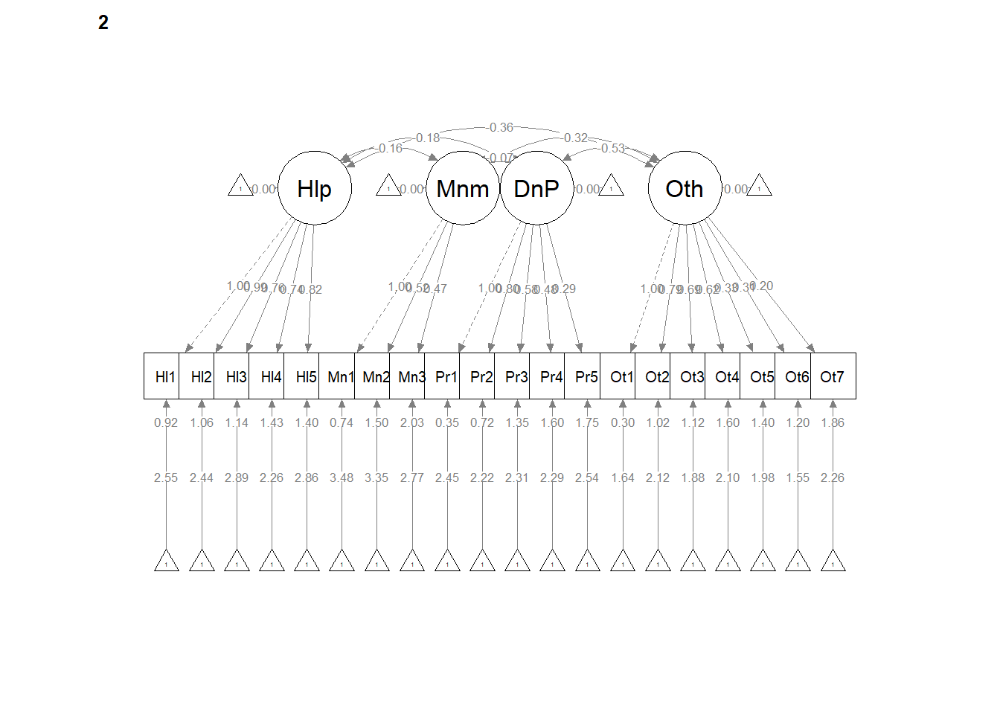
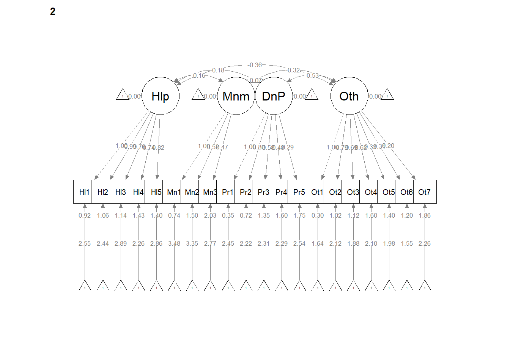
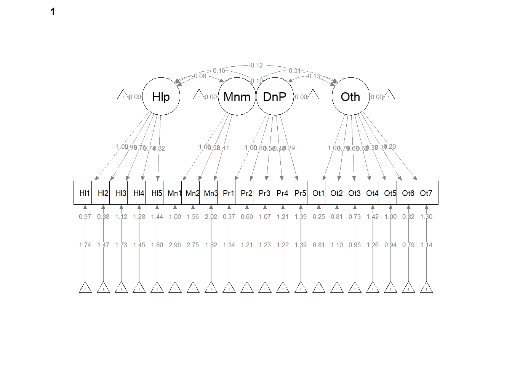

Chapter 12 Invariance Testing
The focus of this lecture is invariance testing – that is, evaluating if a scale operates equivalently across two samples.
12.2 Invariance Testing (aka Multiple-Samples SEM or Multiple-Group CFA [MG-CFA])
12.2.1 Introducing the Topic and the Terminology
Variance: is not a term we are using today. However, recalling the notions of variable (which contrasts with constant), variation, variability may help you with invariance (which means, it doesn’t vary).
Invariance is synonymous with equivalence. That is, there are not statistically significant differences between the two versions/models being compared.
Noninvariance is synonymous with nonequivalence. That is, there are statistically significant differences between the two versions/models being compared
Why we don’t start with “variant” or “variation” I have no clue.
- Equality constraints are imposed by the researcher when we specify (require) two or more parameters to be equal. The particular constraints could be placed on between factor loadings, covariances between factors, intercepts, error variances, error covariances, and so forth. Such constraints simplify the analysis because only one coefficient is needed rather than two. In a multiple-samples/groups, like invariance testing, a cross-group equality constraint forces the computer to derive equal estimates of the same parameter across all groups. This specification corresponds to the null hypothesis that the parameter is equal in all populations from which the samples are drawn. We then conduct formal difference tests to see if, in fact, the model fit is worse when the two groups are constrained to be equal on that parameter (or more likely, set of parameters).
Measurement invariance is a property when a set of indicators measures the same constructs with equal precision over different samples.
A scale is said to have measurement invariance (or, measurement equivalence) across groups if subjects with identical levels of the latent construct have the same expected raw scores on the measure (Hirschfeld & von Brachel, Ruth, 2014).
We can think of this in several ways:
whether values of model parameters of substantive interest vary in meaningful ways across different samples
as an interaction – whether sample membership moderates the relations specified in a model; if there is evidence for a group x model interaction, then the program must be allowed to derive separate estimates of some parameters in each sample in order for the model to have acceptable fit over all samples involved
whether scores from the operationalization of a construct have the same meaning under differing conditions
- these conditions could involve time of measurement, test administration methods, or populations (national samples, clinical/community samples, children/adults, and so forth)
- absence of invariance says that findings of differences between persons cannot be unambiguously isolated from differences owing to time, methods, group membership (thus, there would be no clear basis for drawing inferences from the scores)
Longitudinal measurement invariance evaluates the stability in measurement parameters over time for the same population.
Method invariance (I made up the name, but not the concept) is concerned with whether different methods of administration (online survey versus paper/pencil) are invariant.
My experience with invariance testing is the multiple language/cross-cultural/international context. What makes a test culturally transferable? Byrne’s (2016) article provides a current, excellent, thorough review. Very surface highlights:
- In the past we could claim that a test was culturally adaptive if it involved
- Translation/backtranslation
- Replication of factor structure within the culture
- Replication of validity and reliability estimates
- Today, there is a movement toward testing adaptation
- Including all the past steps, PLUS
- Invariance testing to explore the factor structure across cultures
- Investigation of item bias and construct relations
In this lesson we will focus rather narrowly on Byrne’s (2016) strategy for the statistical/psychometric evaluation of invariance. You might also be interested in Gerstein’s, Systematic Test of Equivalence Procedure (STEP; (2021)), which walks the researcher, item-by-item, through six step analysis of the cultural appropriateness of each item. The researcher is prompted to consider why items are and are not appropriate/relevant and how they might be modified.
12.2.2 Evaluation Strategies
There are two primary options for establishing multigroup invariance.
12.2.2.1 Free baseline approach
In the free baseline approach, testing for measurement invariance is a hierarchical, model trimming, strategy. Specifically, the configural model (the initial, unconstrained model) is gradually restricted by adding cross-group equality constraints in a sequence that corresponds to weak, strong, and strict invariance. At the point that the invariance hypothesis cannot be retained, testing stops (i.e., more restricted models are not considered).
this is moving from nesting to nested models
fit will get worse in each subsequent model
the goal is for there to be a non-significant difference in fit with each additional set of cross-group equality constraints
12.2.2.2 Constrained baseline approach
In the constrained baseline appraoch, testing for measurement invariance is a model building approach where the most restricted model (strict; with equal pattern coefficients, intercepts, and residuals) is the baseline. If necessary, these are sequentially released and compared backwards through the hierarchy (strong, weak, configural) but some researchers will switch around the order in which constraints are released.
this is moving from nested to nesting models
fit will get better in each subsequent model
ideally, fit is satisfactory in the most restricted model (but this often is not the case)
Ideally-and-theoretically, model trimming and building approaches will end up in the same place, but this is not guaranteed.
12.2.3 Invariance Testing Workflow
Today we will will use the free baseline approach in testing the measurement equivalence of a scale across two groups.

Image of a flowchart and decision-tree for multi-group invariance testing
Multigroup invariance testing involves:
- Structuring up the item-level dataset (i.e., reverse-coding any variables)
- For the groups-of-interest, identifying a common baseline model that meets acceptable standards for model fit.
- theoretically and statistically identified
- magnitude and direciton of factor loadings
- Specify and comapre a series of increasingly restrictive models. If the fit is unacceptable, stop. Consider investigating the source of partial measurement invariance.
- Configural invariance (the same CFA structure)
- Weak invariance (configural + pattern/factor loadings)
- Strong invariance (weak + item intercepts)
- Strict (strong + error variances and covariances)
12.2.4 Successive Gradations of Measurement Invariance
The four basic types have different names in different texts.
Invariance is incremental, thus each successive level of variance is prerequisite on meeting the criteria of the prior.
12.2.4.1 Configural invariance
Configural invariance is the least restrictive level. It implies that the number of latent variables and the pattern of loadings on the latent variables on indicators are similar across the groups.
Configural invariance is tested by specifying the same CFA model in each group. Both the number of factors and the correspondence between factors and indicators are the same, but all parameters are freely estimated in each group.
If this model is not consistent with the data, then measurement invariance does not hold at any basic level.
If the model is retained, it says that the same factors are manifested (in somewhat different ways) in each group. Differences could include:
- unequal pattern coefficients
- unequal intercepts
- unequal error variances
If there is only configural variance, a different weighting scheme would be needed for each group.
12.2.4.2 Weak invariance
Weak invariance is sometimes termed pattern invariance and metric invariance. Weak invariance requires configural variance plus equality of undstandardized pattern coefficients. That is, the magnitude of the loadings is similar across the groups.
The hypothesis of weak invariance is tested by:
Imposing an equality constraint over groups on the unstandardized coefficient of each indicator. Then
Comparing with the chi-square difference (\(\chi_{D}^{2}\)) test the configural invariance model and the weak invariance model
In comparing models, if the fit of more restrictive invariance model tested is not appreciably worse than the immediately prior restrictive model, then the more restrictive weak invariance hypothesis is retained.
Thus, the weak invariance model would be compared to the configural invariance model. IF we use the \(\chi_{D}^{2}\) > .05 (and we’ll learn later that there are better/more options), then we can claim weak invariance.
Think back to what we learned about comparing nested/hierarchical models. As we continue through this invariance hierarchy (configural, weak, strong, strict), each of the more restrictive measures will have worse fit (the prior, lesser restrictive model will be the nesting model with “more sticks” and fewer df). Therefore, we’d really like there to be NO DIFFERENCE in model fit when we add between-group equality constraints.
If weak invariance is supported, then we can claim that constructs are manifested the same way in each group
slopes from regressing the indicators on their respective factors are equal across all groups, and
factor scores can be calculated using the same weighting scheme in all groups tested
If weak invariance is rejected, then…
the factors (or at least a subset of items corresponding to those factors) have different meanings in different groups
extreme response styles (ERS) may affect response variability, for example, low ERS is the tendency to avoid endorsing the most extreme options (e.g., never, always); high ERS is the tendency to endorse the most extreme options
If we can support weak invariance, we are justified in formally comparing estimated factor variances or covariances over groups, but because indicators are affected by both factors and sources of unique (residual) variation, we need MORE in order to statistically compare observed variances or covariances over groups. So…
12.2.4.3 Strong invariance**
Strong invariance is also termed scalar invariance; it is predicated on weak invariance. Strong invariance implies that the item loadings plus the item intercepts are similar across the groups. It also implies that there are no systematic response biases. It is required in order to meaningfully compare the means of latent variables across different groups.
Item intercepts are considered to be the origin or starting value of the scale that your factor is based on. Thus, participants who have the same value on the latent construct should have equal values on the items on which the construct is based. These are related to the mean structure, hence you’ll see some refer to this as means.
The intercept estimates the score on an indicator given a true score of zero on the corresponding factor
Equality of intercepts says that different groups use the response scale of that indicator in the same way; that is, a person from one group and a person from a different group with the same level on the factor should obtain the same score on the indicator.
The hypothesis of strong invariance is tested by:
Imposing equality constraints on unstandardized pattern coefficients and intercepts. Then,
Comparing this model with the model of the equality-constrained pattern coefficients (i.e., the weak invariance model) with the \(\chi_{D}^{2}\)
If the fit of the more restrictive invariance model tested is not appreciably worse than the immediately prior restrictive model, then the more restrictive weak invariance hypothesis is retained.
Thus, the strong invariance model would be compared to the weak invariance model. If \(\chi_{D}^{2}\) > .05, then we can claim strong invariance.
If strong invariance is rejected, then we may be concerned about a differential additive (acquiescence) response style: systematic influences unrelated to the factors that decrease or increase the overall level of responding on an indicator in a particular population
Example: if patients are weighed in street clothes in the clinic and in a gown at the hospital, an additive constant is added to true body weight, dependent upon where patients are tested; this contaminates the estimates of mean weight differences over the two clinics.
If a response style affects all indicators, then invariance testing will not detect this pattern; instead the estimates of the construct will be influenced by response styles that are uniform over all indicators.
Differential item functioning is the pattern that an indicator has appreciably unequal pattern coefficients or intercepts over groups; DIF violates measurement invariance.
A goal in multiple-samples CFA is to locate the indicator(s) responsible for rejecting the hypothesis of weak or strong invariance
In test development, we flag items as candidates for revision or deletion
If strong invariance is supported,
group differences in estimated factor means will be unbiased
group differences in indicators means or estimated factor scores will be directly related to the factor means and will not be distorted by differential additive response bias
the factors have a common meaning over groups and any constant effects on the indicators are cancelled out when observed means are compared over groups
strong invariance is the minimal level required for meaningful interpretation of group mean contrasts
12.2.4.4 Strict invariance
Strict invariance requires strong invariance plus the equality in error variances and covariances across groups. This means that the indicators measure the same factors in each group with the same degree of precision. Some rifts about what exactly constitutes strict invariance:
residual invariance is required in order to claim that factors are measured identically across group (Deshon, 2004; Wu et al., 2007)
Because unique (residual) error variance reflects random measurement error and systematic variance, the sum of these two components must be equal across groups (Little, 2013). Kline says that it may be too strict and somewhat unreasonable/unattainable. Little (2013) also cautioned against enforcing this requirement because if the sum of random and systematic parts of unique variance is not exactly equal, the amount of misfit due to equality-constrained residual variances must contaminate estimates elsewhere in the model.
12.2.5 Tests for Model Comparison
It is not sufficient to declare any level of invariance (i.e., constrained (configural, weak, string, or strong) to be adequate on the basis of the traditional evaluation of fit (i.e., strength and significance of factor loadings, fit indices). Rather the whole models must be compared through formal statistical comparison. There are several options and they all have caveats.
A non-significant chi-square difference test (\(\chi_{D}^{2} > .05\)) that compares less-and-more restrictive models indicates that the stricter invariance hypothesis should not be rejected. That is, it supports invariance for the more restricted model.
in large samples, this could be statistically significant, even though the absolute differences in parameter estimates are trivial.
thus, the \(\chi_{D}^{2}\) could indicate lack of measurement invariance when the imposition of cross-group equality constraints makes relatively little difference in fit. Options for verifying:
compare unstandardized solutions across groups
inspect changes in approximate fit indices
BUT…there are few guidelines for how to do this
In reverse, when the CFA change statistic is smaller than .01 (\(\Delta CFI < .01\)) there is evidence that the stricter invariance hypothesis should not be rejected. That is, it supports invariance for the more restricted model.
Simulation studies suggested that stability for different model characteristics such as number of indicators per factor. Here are some findings (guidelines?) for different testing scenarios:
In super large samples (~6,000) use \(\Delta CFI < .002\)
When group sizes are small (\(n < 300\)) and unequal, use \(\Delta CFI < .005\) and \(\Delta RMSEA < .010\)
When group sizes are larger (\(n > 300\)), equal, and the pattern of invariance was mixed (i.e., there are at least two invariant parameters, each of which is from a different category [pattern coefficient, intercept, residual variance]), use \(\Delta CFI < .010\) and \(\Delta RMSEA < .015\)
\(\Delta NCI\) was also stable, but Kline did not provide a thresshold (and I don’t see the NCI reported much in psychometrics papers.
The general practice seems to favor reporing both the \(\chi_{D}^{2}\) and \(\Delta CFI\). Even if \(\chi_{D}^{2} > .05\), a \(\Delta CFI < .01\) supports invariance between models.
12.2.6 Partial measurement invariance
The notion of partial measurement invariance was introduced by Byrne, Shavelson, and Muthen (1989) and is often used to describe an intermediate state of invariance. For example, weak invariance assumes cross-group equality of each unstandardized pattern coefficient. If some, but not all pattern coefficients are invariant, then only partial weak invariance can be claimed.
The researcher may investigate which pattern coefficients are noninvariant and relax (or free) them to differ across groups. Once freed, the research might choose to compare the models with the \(\chi_{D}^{2} > .05\), a \(\Delta CFI < .01\). Once enough pattern coefficients have been freed and the fit across models is equivalent, the researcher might continue the process of determining the degree of invariance in the more restricted evaluations (e.g., strong, strict).
Even if the researcher does not continue with testing for invariance in the increasingly restricting models, they have learned which pattern coefficients vary across groups.
12.3 Research Vignette
This lesson’s research vignette emerges from Conover et al’s Ableist Microaggressions Scale (AMS (2017)). The article reports on a series of three studies comprised the development, refinement, and psychometric evaluation of the AMS. We simulate data from theresults of the exploratory factor analysis in the second study.
Conover et al. (2017) reported support for using a total scale score (22 items) or four, correlated, subscales. Below, I list the four subscales, their number of items, and a single example item. At the outset, let me provide a content warning. For those who hold this particular identity (or related identities) the content in the items may be upsetting. In other lessons, I often provide a variable name that gives an indication of the primary content of the item. In the case of the AMS, I will simply provide an abbreviation of the subscale name and its respective item number. This will allow us to easily inspect the alignment of the item with its intended factor, and hopefully minimize discomfort. If you are not a member of this particular identity, I encourage you to learn about these microaggressions by reading the article in its entirety. Please do not ask members of this group to explain why these microaggressions are harmful or ask if they have encountered them.
There are 20 items on the AMS scale. The frequency scaling ranged from 0(never) to 5(very frequently).
The four factors, number of items, and sample item are as follows:
- Helplessness
- 5 items
- “People feel they need to do something to help me because I have a disability.”
- Abbreviated in the simulated data as “Help#”
- Minimization
- 3 items
- “People minimize my disability or suggest that it could be worse.”
- Abbreviated in the simulated data as “Min#”
- Denial of Personhood
- 5 items
- “People don’t see me as a whole person because I have a disability.”
- Abbreviated in the simulated data as “Pers#”
- Otherization
- 7 items
- “People indicate that they would not date a person with a disability.”
- Abbreviated in the simulated data as “Oth#”
My simulation for this lesson differs from the simulation in Simulations chapter/lesson. This is due to the lesson’s focus on invariance testing. The invariance testing involves comparing mild (mild plus moderate levels) and severe (severe and very severe levels) levels of severity. While I have used the same factor loadings (i.e., those from the EFA) in the simulation, I have increased the sample size to the number reported in the two samples (i.e., those in the mild and moderate levels of disability [548] plus those in the severe and very severe levels of disability [285]). Because I do not have access to the separate factor structure I temporarily score the AMS total, rank order them, and assign the lowest 548 scores to a mild condition and the remainder to the severe condition. I made this decision based on Conover et al.’s (2017) report that there were statistically significant differences in AMS scores as a function of disability severity. Admittedly, this is an oversimplification of the result.
Below I walk through the data simulation. This is not an essential portion of the lesson, but I will lecture it in case you are interested. None of the items are negatively worded (relative to the other items), so there is no need to reverse-score any items.
set.seed(211023)
AMS_Imat <- matrix(c(.74, .75, .65, .58, .62, .01, .05, -.08, .00, .03, .01, .04, .25, -.06, -.02, .11, .18, .25, .26, .14,
-.03, .00, .20, -.07, .15, .71, .52, .47, .02, .04, .00, -.01, .01, -.18, .07, .14, -.17, .05, -.12,.16,
.11, -.07, -.03, .20, .03, .00, .07, .15, .91, .85, .64, .56, .42, .04, .04, -.15, .03, .13, .07, .14,
-.12, .06, .16, -.01, .02, -.07, .05, .20, -.01, .01, .19, .16, .21, .89, .73, .70, .46, .41, .40, .32), ncol=4) #primary factor loadings for the four factors taken from Table 2 of the manuscript
rownames(AMS_Imat) <- c("Help1", "Help2", "Help3", "Help4", "Help5", "Min1", "Min2", "Min3", "Pers1", "Pers2", "Pers3", "Pers4", "Pers5", "Oth1", "Oth2", "Oth3", "Oth4", "Oth5","Oth6", "Oth7") #variable names for the items
colnames(AMS_Imat) <- c("Helplessness", "Minimization", "Personhood", "Otherization") #component (subscale) names
AMS_ICorMat <- AMS_Imat %*% t(AMS_Imat) #create the correlation matrix via some matrix algebra
diag(AMS_ICorMat) <- 1
#SzyCorMat #prints the correlation matrix
AMS_iM <- c(1.95, 1.74, 2.11, 1.61, 2.13, 3.28, 3.02, 2.09, 1.63, 1.43, 1.48, 1.44, 1.71, .89, 1.35, 1.06, 1.39, 1.15, .91, 1.42) #item means from Table 2
AMS_iSD <- c(1.54, 1.56, 1.52, 1.61, 1.64, 1.85, 1.54, 1.82, 1.56, 1.51, 1.60, 1.64, 1.55, 1.34, 1.46, 1.50, 1.63, 1.42, 1.29, 1.52) #item standard deviations from Table 2
AMS_ICovMat <- AMS_iSD %*% t(AMS_iSD) * AMS_ICorMat #creates a covariance matrix (with more matrix algebra) from the correlation matrix
dfAMSi <- as.data.frame(round(MASS::mvrnorm(n=833, mu = AMS_iM, Sigma = AMS_ICovMat, empirical = TRUE),0)) #creates the item level data from the sample size, mean, and covariance matrix; wrapped in commands to round to 0 decimal places and format as a df
dfAMSi[dfAMSi>5]<-5 #restricts the upperbound of all variables to be 5 or less
dfAMSi[dfAMSi<0]<-0 #resticts the lowerbound of all variable to be 0 or greater
#Scoring the AMS
AMS_vars <- c("Help1", "Help2", "Help3", "Help4", "Help5", "Min1", "Min2", "Min3", "Pers1", "Pers2", "Pers3", "Pers4", "Pers5", "Oth1", "Oth2", "Oth3", "Oth4", "Oth5","Oth6", "Oth7")
dfAMSi$AMSm <- sjstats::mean_n(dfAMSi[,AMS_vars], .80)#Even though our simulation resulted in no missingness, I like to let the "score if there is <80% missing" script to ride along. It doesn't hurt anything
#Rank ordering the AMSm scores (i.e., mean of AMS) and assigning groups
dfAMSi$Rank <- rank(dfAMSi$AMSm)
library(tidyverse) #opening this package so I can pipe
dfAMSi <- dfAMSi %>%
mutate(Severity = case_when(
Rank <= 548 ~"Mild",
Rank >548 ~"Severe"
))
dfAMSi[,'Severity'] <- as.factor(dfAMSi[,'Severity'])#making it a factor
#Checking to see if the counts are right
#dfAMSi %>%
#count(Severity) #Given the ties among ranks, we end up with 537 in the mild condition and 296 in the severe condition; we'll go with it
#Below is code if you would like an ID number for each case. Expecially at first, the ID number would just need to be removed, so I will not include it in the original simulation. We will add it later.
#library(tidyverse)
#dfAMSi <- dfAMSi %>% dplyr::mutate(ID = row_number()) #add ID to each row
#dfAMSi <- dfAMSi %>%dplyr::select(ID, everything())#moving the ID number to the first column; requiresLet’s take a quick peek at the data to see if everthing looks correct.
psych::describe(dfAMSi) vars n mean sd median trimmed mad min max range skew
Help1 1 833 2.03 1.38 2.00 1.98 1.48 0.0 5.0 5.0 0.22
Help2 2 833 1.81 1.39 2.00 1.72 1.48 0.0 5.0 5.0 0.41
Help3 3 833 2.14 1.38 2.00 2.11 1.48 0.0 5.0 5.0 0.18
Help4 4 833 1.74 1.39 2.00 1.63 1.48 0.0 5.0 5.0 0.45
Help5 5 833 2.18 1.49 2.00 2.13 1.48 0.0 5.0 5.0 0.17
Min1 6 833 3.14 1.50 3.00 3.26 1.48 0.0 5.0 5.0 -0.44
Min2 7 833 2.97 1.41 3.00 3.01 1.48 0.0 5.0 5.0 -0.24
Min3 8 833 2.15 1.58 2.00 2.08 1.48 0.0 5.0 5.0 0.20
Pers1 9 833 1.74 1.39 2.00 1.64 1.48 0.0 5.0 5.0 0.36
Pers2 10 833 1.57 1.30 1.00 1.46 1.48 0.0 5.0 5.0 0.52
Pers3 11 833 1.61 1.37 2.00 1.48 1.48 0.0 5.0 5.0 0.55
Pers4 12 833 1.60 1.38 1.00 1.47 1.48 0.0 5.0 5.0 0.48
Pers5 13 833 1.80 1.39 2.00 1.71 1.48 0.0 5.0 5.0 0.43
Oth1 14 833 1.10 1.11 1.00 0.96 1.48 0.0 5.0 5.0 0.80
Oth2 15 833 1.46 1.27 1.00 1.35 1.48 0.0 5.0 5.0 0.55
Oth3 16 833 1.28 1.20 1.00 1.15 1.48 0.0 5.0 5.0 0.74
Oth4 17 833 1.56 1.40 1.00 1.41 1.48 0.0 5.0 5.0 0.59
Oth5 18 833 1.31 1.22 1.00 1.20 1.48 0.0 5.0 5.0 0.58
Oth6 19 833 1.06 1.08 1.00 0.93 1.48 0.0 5.0 5.0 0.73
Oth7 20 833 1.54 1.35 1.00 1.40 1.48 0.0 5.0 5.0 0.62
AMSm 21 833 1.79 0.56 1.75 1.78 0.59 0.4 3.5 3.1 0.26
Rank 22 833 417.00 240.52 413.00 417.01 300.23 1.5 833.0 831.5 0.00
Severity* 23 833 1.36 0.48 1.00 1.32 0.00 1.0 2.0 1.0 0.60
kurtosis se
Help1 -0.70 0.05
Help2 -0.60 0.05
Help3 -0.69 0.05
Help4 -0.65 0.05
Help5 -0.92 0.05
Min1 -0.72 0.05
Min2 -0.79 0.05
Min3 -1.04 0.05
Pers1 -0.82 0.05
Pers2 -0.41 0.05
Pers3 -0.45 0.05
Pers4 -0.66 0.05
Pers5 -0.66 0.05
Oth1 -0.04 0.04
Oth2 -0.47 0.04
Oth3 -0.05 0.04
Oth4 -0.48 0.05
Oth5 -0.55 0.04
Oth6 -0.38 0.04
Oth7 -0.42 0.05
AMSm -0.29 0.02
Rank -1.20 8.33
Severity* -1.64 0.02The optional script below will let you save the simulated data to your computing environment as either a .csv file (think “Excel lite”) or .rds object (preserves any formatting you might do). If you save the .csv file and bring it back in, you will lose any formatting (e.g., ordered factors will be interpreted as character variables).
#write the simulated data as a .csv
#write.table(dfAMSi, file="dfAMSi.csv", sep=",", col.names=TRUE, row.names=FALSE)
#bring back the simulated dat from a .csv file
#dfAMSi <- read.csv ("dfAMSi.csv", header = TRUE)
#str(dfAMSi)In this lesson I made the Severity variable a factor during the simulation. Importing the exported .csv file will lose that formating. Therefore, unless you need to use a .csv file outside of R, I recommend using the .rds file.
An .rds file preserves all formatting to variables prior to the export and re-import. If you already exported/imported the .csv file, you will need to re-run the simulation.
#to save the df as an .rds (think "R object") file on your computer; it should save in the same file as the .rmd file you are working with
#saveRDS(dfAMSi, "dfAMSi.rds")
#bring back the simulated dat from an .rds file
#dfAMSi <- readRDS("dfAMSi.rds")
#str(dfAMSi)12.4 Whole-Group and Baseline Analyses
Conover et al.(2017) conducted the invariance testing with the four-factor, correlated factors model. Let’s start by simply by creating an overall measurement model from the dataset without regard to group membership.
12.4.1 Whole Group CFA
With the number of items per scale ranging from 3 to 7 on this multidimensional, first-order, factor structure we are sufficiently identified. Remember, rule is at least 3 items/indicators per factor for unidimensional scales and 2 items/indicators per factor for a multidimensional scale.
AMS4CorrMod <- '
Helplessness =~ Help1 + Help2 + Help3 + Help4 + Help5
Minimization =~ Min1 + Min2 + Min3
DenialPersonhood =~ Pers1 + Pers2 + Pers3 + Pers4 + Pers5
Otherization =~ Oth1 + Oth2 + Oth3 + Oth4 + Oth5 + Oth6 + Oth7
'
AMS4CorrFit <- lavaan::cfa(AMS4CorrMod, data = dfAMSi)
lavaan::summary(AMS4CorrFit, fit.measures = TRUE, standardized = TRUE)lavaan 0.6-9 ended normally after 46 iterations
Estimator ML
Optimization method NLMINB
Number of model parameters 46
Number of observations 833
Model Test User Model:
Test statistic 675.750
Degrees of freedom 164
P-value (Chi-square) 0.000
Model Test Baseline Model:
Test statistic 4257.496
Degrees of freedom 190
P-value 0.000
User Model versus Baseline Model:
Comparative Fit Index (CFI) 0.874
Tucker-Lewis Index (TLI) 0.854
Loglikelihood and Information Criteria:
Loglikelihood user model (H0) -26743.318
Loglikelihood unrestricted model (H1) -26405.442
Akaike (AIC) 53578.635
Bayesian (BIC) 53795.987
Sample-size adjusted Bayesian (BIC) 53649.906
Root Mean Square Error of Approximation:
RMSEA 0.061
90 Percent confidence interval - lower 0.056
90 Percent confidence interval - upper 0.066
P-value RMSEA <= 0.05 0.000
Standardized Root Mean Square Residual:
SRMR 0.077
Parameter Estimates:
Standard errors Standard
Information Expected
Information saturated (h1) model Structured
Latent Variables:
Estimate Std.Err z-value P(>|z|) Std.lv Std.all
Helplessness =~
Help1 1.000 0.952 0.690
Help2 1.032 0.065 15.880 0.000 0.983 0.706
Help3 0.926 0.062 14.890 0.000 0.882 0.641
Help4 0.819 0.061 13.422 0.000 0.780 0.563
Help5 0.942 0.067 14.148 0.000 0.897 0.601
Minimization =~
Min1 1.000 0.907 0.604
Min2 0.866 0.121 7.167 0.000 0.785 0.559
Min3 0.838 0.115 7.289 0.000 0.760 0.480
DenialPersonhood =~
Pers1 1.000 1.217 0.878
Pers2 0.852 0.037 23.008 0.000 1.037 0.798
Pers3 0.683 0.039 17.615 0.000 0.832 0.609
Pers4 0.598 0.040 14.963 0.000 0.728 0.527
Pers5 0.465 0.041 11.322 0.000 0.566 0.408
Otherization =~
Oth1 1.000 0.909 0.823
Oth2 0.968 0.053 18.385 0.000 0.880 0.694
Oth3 0.858 0.049 17.349 0.000 0.781 0.650
Oth4 0.750 0.058 13.016 0.000 0.682 0.489
Oth5 0.594 0.050 11.807 0.000 0.541 0.444
Oth6 0.472 0.045 10.555 0.000 0.429 0.398
Oth7 0.483 0.056 8.606 0.000 0.439 0.326
Covariances:
Estimate Std.Err z-value P(>|z|) Std.lv Std.all
Helplessness ~~
Minimization 0.061 0.045 1.344 0.179 0.070 0.070
DenialPersonhd 0.136 0.049 2.747 0.006 0.117 0.117
Otherization 0.100 0.038 2.637 0.008 0.115 0.115
Minimization ~~
DenialPersonhd 0.157 0.056 2.806 0.005 0.142 0.142
Otherization 0.009 0.042 0.219 0.827 0.011 0.011
DenialPersonhood ~~
Otherization 0.063 0.046 1.388 0.165 0.057 0.057
Variances:
Estimate Std.Err z-value P(>|z|) Std.lv Std.all
.Help1 0.997 0.066 15.151 0.000 0.997 0.524
.Help2 0.970 0.066 14.652 0.000 0.970 0.501
.Help3 1.113 0.068 16.390 0.000 1.113 0.589
.Help4 1.309 0.074 17.761 0.000 1.309 0.682
.Help5 1.425 0.083 17.182 0.000 1.425 0.639
.Min1 1.430 0.134 10.692 0.000 1.430 0.635
.Min2 1.356 0.108 12.506 0.000 1.356 0.687
.Min3 1.925 0.124 15.470 0.000 1.925 0.769
.Pers1 0.439 0.052 8.476 0.000 0.439 0.229
.Pers2 0.613 0.046 13.260 0.000 0.613 0.363
.Pers3 1.171 0.064 18.372 0.000 1.171 0.629
.Pers4 1.379 0.072 19.115 0.000 1.379 0.722
.Pers5 1.604 0.081 19.751 0.000 1.604 0.834
.Oth1 0.394 0.037 10.774 0.000 0.394 0.323
.Oth2 0.835 0.052 15.973 0.000 0.835 0.519
.Oth3 0.831 0.049 16.974 0.000 0.831 0.577
.Oth4 1.482 0.078 18.994 0.000 1.482 0.761
.Oth5 1.189 0.062 19.306 0.000 1.189 0.803
.Oth6 0.979 0.050 19.567 0.000 0.979 0.841
.Oth7 1.625 0.082 19.881 0.000 1.625 0.894
Helplessness 0.907 0.091 9.977 0.000 1.000 1.000
Minimization 0.822 0.142 5.779 0.000 1.000 1.000
DenialPersonhd 1.482 0.103 14.382 0.000 1.000 1.000
Otherization 0.827 0.065 12.807 0.000 1.000 1.000#item labels
#I took out commas internal to the items because the comma causes the text to split across columns in the exported .csv
AMSv1 <- c(Help1 = "People feel they need to do something to help me because I have a disability", Help2 = "People express admiration for me or describe me as inspirational simply because I live with a disability", Help3 = "People express pity for me because I have a disability", Help4 = "People do not expect me to have a job or volunteer activities because I have a disability", Help5 = "People offer me unsolicited unwanted or unneeded help because I have a disability", Min1 = "People are unwilling to accept that I have a disability because I appear able-bodied", Min2 = "People minimize my disability or suggest that it could be worse", Min3 = "People act as if accomodations for my disability are unnecessary", Pers1 = "People don't see me as a whole person because I have a disability", Pers2 = "People act as if I am nothing more than my disability", Pers3 = "People speak to me as if I am a child or do not take me seriously because I have a disability", Pers4 = "People assume I have low intelligence because I have a disability", Pers5 = "Because I have a disability people attempt to make decisions fro me that I could make myself", Oth1 = "People think I should not date or pursue sexual relationships because I have a disability", Oth2 = "People indicate they would not date a person with a disability", Oth3 = "People suggest that I cannot or should not have children because I have a disability", Oth4 = "People stare at me because I have a disability", Oth5 = "Because I have a disability people seem surprised to see me outside my home", Oth6 = "Because I have a disability people assume I have an extraordinary gift or talent",Oth7 = "People suggest that living with a disability would not be a worthwhile existence")
#put it in a table
AMS_Tables <- semTable::semTable(AMS4CorrFit, columnLabels = c(eststars = "Estimate", se = "SE", p = "p-value"), fits = c("chisq", "df", "pvalue", "cfi", "rmsea", "rmsea.ci.lower", "rmsea.ci.upper", "srmr", "aic", "bic"), varLabels = AMSv1, file = "AMS_TAbles", type = "csv", print.results = FALSE)#By changing print.results = TRUE, you can see the output below12.4.2 Interpreting the Output
| Criteria | Our Results | Criteria met? |
|---|---|---|
| Factor loadings significant, strong, proper valence | Help: .56 to .71; Min: .48 to .60; Pers: .41 to .88; Oth: .33 to .82 | Yes |
| Non-significant chi-square | \(\chi ^{2}(164) = 675.75, p < .001\) | No |
| \(CFI\geq .95\) | CFI = .874 | No |
| \(RMSEA\leq .05\) (but definitely < .10) | RMSEA = .061, 90%CI(.056, .066) | Yes(ish) |
| \(SRMR\leq .08\) (but definitely < .10) | SRMS = .077 | Yes |
| Combination rule: \(CFI \geq .95\) and \(SRMR \leq .08\) | CFI = .874, SRS = .077 | No |
12.4.3 Partial Write-up
Correlated factors model for all in sample. The model where factors were free to covary demonstrated the following fit to the data: \(\chi ^{2}((164) = 675.75, p < .001\), CFI = .874, RMSEA = .061, 90%CI(.056, .066), SRMR = .077. Factor loadings ranged from .56 to .71 for the Helplessness scale, .48 to .60 for the Minimization scale, .41 to .88 for the Denial of Personhood scale, and .33 to .82 for the Otherization scale.
Producing a figure can be useful to represent what we did to others as well as checking our own work. That is, “Did we think we did what we intended?” When the *what = “col”, whatLabels = “stand”) combination is shown, paths that are “fixed” are represented by dashed lines. Below, we expect to see each the four factors predicting only the items associated with their factor, one item for each factor (the first on the left) should be specified as the indicator variable (and represented with a dashed line), and the factors/latent variables should not be freed to covary (i.e., an uncorrelated traits or orthogonal model). Because they are “fixed” to be 0.00, they will be represented with dashed curves with double-headed arrows.
#displays standardized pattern coefficients
semPlot::semPaths(AMS4CorrFit, layout = "tree", style = "lisrel", what = "col", whatLabels = "stand") 
#displays estimates/unstandardized regression weights
#semPlot::semPaths(AMS4CorrFit, layout = "tree", style = "lisrel", what = "col", whatLabels = "est")Our fit is fairly similar to what Conover et al. reported in their article. Specifically, their four-factor, correlated factors model, had a statisticaly significant chi-square. REgarding fit: CFI = .89, SRMR = .07, and RMSEA = .07 CI90% (.06, .07). As researchers, they were satisfied with the result and they asked the question, “Is measure invariant across disability severity.” A first (but not complete) step is to evaluate the model, separately for the groups of interest. In their case it was mild (where they combined mild and moderate levels of severity) and severe (combining severe and very severe levels).
12.4.4 Baseline Model when Severity = Mild
Let’s start by subsetting the data.
mild_df <- subset(dfAMSi, Severity == "Mild")
severe_df <- subset(dfAMSi, Severity == "Severe")Let’s run the CFA model for those participants whose data were classified as “mild.”
MildFit <- lavaan::cfa(AMS4CorrMod, data = mild_df)
lavaan::summary(MildFit, fit.measures = TRUE, standardized = TRUE)lavaan 0.6-9 ended normally after 46 iterations
Estimator ML
Optimization method NLMINB
Number of model parameters 46
Number of observations 537
Model Test User Model:
Test statistic 307.352
Degrees of freedom 164
P-value (Chi-square) 0.000
Model Test Baseline Model:
Test statistic 1797.053
Degrees of freedom 190
P-value 0.000
User Model versus Baseline Model:
Comparative Fit Index (CFI) 0.911
Tucker-Lewis Index (TLI) 0.897
Loglikelihood and Information Criteria:
Loglikelihood user model (H0) -16500.310
Loglikelihood unrestricted model (H1) -16346.634
Akaike (AIC) 33092.619
Bayesian (BIC) 33289.775
Sample-size adjusted Bayesian (BIC) 33143.756
Root Mean Square Error of Approximation:
RMSEA 0.040
90 Percent confidence interval - lower 0.033
90 Percent confidence interval - upper 0.047
P-value RMSEA <= 0.05 0.990
Standardized Root Mean Square Residual:
SRMR 0.060
Parameter Estimates:
Standard errors Standard
Information Expected
Information saturated (h1) model Structured
Latent Variables:
Estimate Std.Err z-value P(>|z|) Std.lv Std.all
Helplessness =~
Help1 1.000 0.822 0.635
Help2 1.053 0.100 10.517 0.000 0.865 0.682
Help3 0.828 0.089 9.317 0.000 0.681 0.544
Help4 0.717 0.087 8.210 0.000 0.589 0.460
Help5 0.920 0.100 9.217 0.000 0.756 0.536
Minimization =~
Min1 1.000 1.109 0.729
Min2 0.538 0.102 5.251 0.000 0.596 0.432
Min3 0.536 0.106 5.084 0.000 0.595 0.389
DenialPersonhood =~
Pers1 1.000 1.073 0.883
Pers2 0.750 0.056 13.279 0.000 0.805 0.714
Pers3 0.545 0.054 10.108 0.000 0.585 0.491
Pers4 0.452 0.054 8.401 0.000 0.485 0.403
Pers5 0.283 0.054 5.257 0.000 0.303 0.249
Otherization =~
Oth1 1.000 0.774 0.833
Oth2 0.830 0.078 10.701 0.000 0.642 0.585
Oth3 0.687 0.069 9.977 0.000 0.532 0.529
Oth4 0.624 0.084 7.424 0.000 0.483 0.375
Oth5 0.285 0.065 4.363 0.000 0.220 0.215
Oth6 0.359 0.061 5.900 0.000 0.278 0.294
Oth7 0.187 0.073 2.571 0.010 0.145 0.126
Covariances:
Estimate Std.Err z-value P(>|z|) Std.lv Std.all
Helplessness ~~
Minimization -0.075 0.060 -1.266 0.205 -0.083 -0.083
DenialPersonhd -0.165 0.050 -3.272 0.001 -0.187 -0.187
Otherization -0.114 0.038 -3.021 0.003 -0.179 -0.179
Minimization ~~
DenialPersonhd -0.100 0.072 -1.386 0.166 -0.084 -0.084
Otherization -0.299 0.058 -5.187 0.000 -0.348 -0.348
DenialPersonhood ~~
Otherization -0.133 0.045 -2.963 0.003 -0.161 -0.161
Variances:
Estimate Std.Err z-value P(>|z|) Std.lv Std.all
.Help1 0.998 0.082 12.133 0.000 0.998 0.597
.Help2 0.863 0.079 10.954 0.000 0.863 0.536
.Help3 1.100 0.080 13.778 0.000 1.100 0.704
.Help4 1.293 0.088 14.741 0.000 1.293 0.788
.Help5 1.417 0.102 13.892 0.000 1.417 0.713
.Min1 1.081 0.225 4.809 0.000 1.081 0.468
.Min2 1.548 0.116 13.351 0.000 1.548 0.813
.Min3 1.978 0.140 14.168 0.000 1.978 0.848
.Pers1 0.325 0.073 4.438 0.000 0.325 0.220
.Pers2 0.623 0.056 11.175 0.000 0.623 0.490
.Pers3 1.079 0.071 15.219 0.000 1.079 0.759
.Pers4 1.217 0.077 15.716 0.000 1.217 0.838
.Pers5 1.390 0.086 16.172 0.000 1.390 0.938
.Oth1 0.265 0.045 5.859 0.000 0.265 0.307
.Oth2 0.794 0.059 13.525 0.000 0.794 0.658
.Oth3 0.726 0.051 14.350 0.000 0.726 0.720
.Oth4 1.423 0.091 15.602 0.000 1.423 0.859
.Oth5 1.001 0.062 16.164 0.000 1.001 0.954
.Oth6 0.818 0.051 15.946 0.000 0.818 0.914
.Oth7 1.305 0.080 16.313 0.000 1.305 0.984
Helplessness 0.675 0.099 6.828 0.000 1.000 1.000
Minimization 1.229 0.249 4.947 0.000 1.000 1.000
DenialPersonhd 1.152 0.113 10.227 0.000 1.000 1.000
Otherization 0.599 0.066 9.126 0.000 1.000 1.000Not surprisingly, our results are similar to the total group. I notice that the pattern coefficients wiggle around a little more (one as low as .13) but that the fit indices seem a little stronger.
| Criteria | Mild | Severe |
|---|---|---|
| Factor loadings: Help | .46 to .64 | |
| Factor loadings: Min | .39 to .73 | |
| Factor loadings: Pers | .25 to .88 | |
| Factor loadings: Oth | .13 to .83 | |
| Non-significant chi-square | \(p < .001\) | |
| \(CFI\geq .95\) | CFI = .911 | |
| \(SRMR\leq .08\) (but definitely < .10) | SRMR = .060 | |
| \(RMSEA\leq .05\) (but definitely < .10) | RMSEA = .040, 90%CI(.033, .047) |
12.4.5 Baseline Model when Severity = Severe
Let’s run the CFA model again for those participants whose data were classified as “severe.”
SevereFit <- lavaan::cfa(AMS4CorrMod, data = severe_df)
lavaan::summary(SevereFit, fit.measures = TRUE, standardized = TRUE)lavaan 0.6-9 ended normally after 46 iterations
Estimator ML
Optimization method NLMINB
Number of model parameters 46
Number of observations 296
Model Test User Model:
Test statistic 300.089
Degrees of freedom 164
P-value (Chi-square) 0.000
Model Test Baseline Model:
Test statistic 1409.846
Degrees of freedom 190
P-value 0.000
User Model versus Baseline Model:
Comparative Fit Index (CFI) 0.888
Tucker-Lewis Index (TLI) 0.871
Loglikelihood and Information Criteria:
Loglikelihood user model (H0) -9601.349
Loglikelihood unrestricted model (H1) -9451.305
Akaike (AIC) 19294.699
Bayesian (BIC) 19464.455
Sample-size adjusted Bayesian (BIC) 19318.575
Root Mean Square Error of Approximation:
RMSEA 0.053
90 Percent confidence interval - lower 0.043
90 Percent confidence interval - upper 0.062
P-value RMSEA <= 0.05 0.295
Standardized Root Mean Square Residual:
SRMR 0.079
Parameter Estimates:
Standard errors Standard
Information Expected
Information saturated (h1) model Structured
Latent Variables:
Estimate Std.Err z-value P(>|z|) Std.lv Std.all
Helplessness =~
Help1 1.000 1.025 0.744
Help2 0.879 0.097 9.094 0.000 0.901 0.650
Help3 0.662 0.086 7.725 0.000 0.679 0.532
Help4 0.768 0.096 8.026 0.000 0.787 0.556
Help5 0.703 0.093 7.517 0.000 0.720 0.516
Minimization =~
Min1 1.000 1.179 0.839
Min2 0.490 0.135 3.626 0.000 0.577 0.423
Min3 0.347 0.113 3.062 0.002 0.409 0.274
DenialPersonhood =~
Pers1 1.000 1.233 0.888
Pers2 0.859 0.065 13.216 0.000 1.059 0.790
Pers3 0.610 0.066 9.178 0.000 0.752 0.544
Pers4 0.517 0.069 7.499 0.000 0.638 0.452
Pers5 0.285 0.068 4.171 0.000 0.352 0.257
Otherization =~
Oth1 1.000 1.057 0.887
Oth2 0.763 0.074 10.245 0.000 0.806 0.622
Oth3 0.703 0.074 9.461 0.000 0.743 0.575
Oth4 0.612 0.083 7.409 0.000 0.647 0.455
Oth5 0.390 0.073 5.320 0.000 0.412 0.330
Oth6 0.259 0.067 3.882 0.000 0.274 0.242
Oth7 0.207 0.082 2.522 0.012 0.218 0.158
Covariances:
Estimate Std.Err z-value P(>|z|) Std.lv Std.all
Helplessness ~~
Minimization -0.165 0.095 -1.731 0.083 -0.137 -0.137
DenialPersonhd -0.163 0.092 -1.778 0.075 -0.129 -0.129
Otherization -0.401 0.085 -4.698 0.000 -0.370 -0.370
Minimization ~~
DenialPersonhd -0.089 0.107 -0.830 0.406 -0.061 -0.061
Otherization -0.336 0.095 -3.521 0.000 -0.269 -0.269
DenialPersonhood ~~
Otherization -0.516 0.096 -5.388 0.000 -0.396 -0.396
Variances:
Estimate Std.Err z-value P(>|z|) Std.lv Std.all
.Help1 0.846 0.110 7.669 0.000 0.846 0.446
.Help2 1.109 0.117 9.487 0.000 1.109 0.577
.Help3 1.165 0.108 10.750 0.000 1.165 0.717
.Help4 1.383 0.131 10.558 0.000 1.383 0.691
.Help5 1.427 0.131 10.867 0.000 1.427 0.733
.Min1 0.583 0.353 1.653 0.098 0.583 0.296
.Min2 1.531 0.153 10.019 0.000 1.531 0.821
.Min3 2.066 0.178 11.636 0.000 2.066 0.925
.Pers1 0.409 0.093 4.417 0.000 0.409 0.212
.Pers2 0.676 0.086 7.871 0.000 0.676 0.376
.Pers3 1.345 0.119 11.308 0.000 1.345 0.704
.Pers4 1.589 0.136 11.658 0.000 1.589 0.796
.Pers5 1.746 0.145 12.029 0.000 1.746 0.934
.Oth1 0.302 0.072 4.211 0.000 0.302 0.213
.Oth2 1.028 0.097 10.596 0.000 1.028 0.613
.Oth3 1.114 0.101 10.983 0.000 1.114 0.669
.Oth4 1.603 0.138 11.581 0.000 1.603 0.793
.Oth5 1.387 0.117 11.902 0.000 1.387 0.891
.Oth6 1.199 0.100 12.033 0.000 1.199 0.941
.Oth7 1.861 0.154 12.112 0.000 1.861 0.975
Helplessness 1.051 0.164 6.419 0.000 1.000 1.000
Minimization 1.389 0.382 3.636 0.000 1.000 1.000
DenialPersonhd 1.521 0.177 8.575 0.000 1.000 1.000
Otherization 1.117 0.132 8.438 0.000 1.000 1.000Our visual inspection of the similarity of psychometric characteristics suggests that the measure is functioning similarly across the two levels of severity.
| Criteria | Mild | Severe |
|---|---|---|
| Factor loadings: Help | .46 to .64 | .52 to .74 |
| Factor loadings: Min | .39 to .73 | .27 to .84 |
| Factor loadings: Pers | .25 to .88 | .26 to .89 |
| Factor loadings: Oth | .13 to .83 | .16 to .89 |
| Non-significant chi-square | \(p < .001\) | \(p < .001\) |
| \(CFI\geq .95\) or \(CFI\geq .90\) | .911 | .888 |
| \(SRMR\leq .08\) (but definitely < .10) | .060 | .079 |
| \(RMSEA\leq .05\) (but definitely < .10) | .040, 90%CI(.033, .047) | .053, 90% (.043, .062) |
This, though, does not constitute a formal evaluation. Thus, we continue with testing for multigroup invariance.
12.5 Configural Invariance
Configural invariance is our least restrictive level. We are essentially specifying ONE STRUCTURE – four correlated factors, each with 3 to 7 items/indicators. Each model is allowed to have its own loadings, error variances, and so forth. It’s only the structure (the configuration) that is consistent.
The same model we had before works. We create the configural model simply by specifying group = “Severity” in the cfa() function.
configural <- lavaan::cfa(AMS4CorrMod, data = dfAMSi, group = "Severity")
lavaan::summary(configural, fit.measures = TRUE, standardized = TRUE)lavaan 0.6-9 ended normally after 88 iterations
Estimator ML
Optimization method NLMINB
Number of model parameters 132
Number of observations per group:
Mild 537
Severe 296
Model Test User Model:
Test statistic 607.441
Degrees of freedom 328
P-value (Chi-square) 0.000
Test statistic for each group:
Mild 307.352
Severe 300.089
Model Test Baseline Model:
Test statistic 3206.899
Degrees of freedom 380
P-value 0.000
User Model versus Baseline Model:
Comparative Fit Index (CFI) 0.901
Tucker-Lewis Index (TLI) 0.885
Loglikelihood and Information Criteria:
Loglikelihood user model (H0) -26101.659
Loglikelihood unrestricted model (H1) -25797.939
Akaike (AIC) 52467.318
Bayesian (BIC) 53091.023
Sample-size adjusted Bayesian (BIC) 52671.836
Root Mean Square Error of Approximation:
RMSEA 0.045
90 Percent confidence interval - lower 0.040
90 Percent confidence interval - upper 0.051
P-value RMSEA <= 0.05 0.919
Standardized Root Mean Square Residual:
SRMR 0.064
Parameter Estimates:
Standard errors Standard
Information Expected
Information saturated (h1) model Structured
Group 1 [Mild]:
Latent Variables:
Estimate Std.Err z-value P(>|z|) Std.lv Std.all
Helplessness =~
Help1 1.000 0.822 0.635
Help2 1.053 0.100 10.517 0.000 0.865 0.682
Help3 0.828 0.089 9.317 0.000 0.681 0.544
Help4 0.717 0.087 8.210 0.000 0.589 0.460
Help5 0.920 0.100 9.217 0.000 0.756 0.536
Minimization =~
Min1 1.000 1.109 0.729
Min2 0.538 0.102 5.251 0.000 0.596 0.432
Min3 0.536 0.106 5.084 0.000 0.595 0.389
DenialPersonhood =~
Pers1 1.000 1.073 0.883
Pers2 0.750 0.056 13.279 0.000 0.805 0.714
Pers3 0.545 0.054 10.108 0.000 0.585 0.491
Pers4 0.452 0.054 8.401 0.000 0.485 0.403
Pers5 0.283 0.054 5.257 0.000 0.303 0.249
Otherization =~
Oth1 1.000 0.774 0.833
Oth2 0.830 0.078 10.701 0.000 0.642 0.585
Oth3 0.687 0.069 9.977 0.000 0.532 0.529
Oth4 0.624 0.084 7.424 0.000 0.483 0.375
Oth5 0.285 0.065 4.363 0.000 0.220 0.215
Oth6 0.359 0.061 5.900 0.000 0.278 0.294
Oth7 0.187 0.073 2.571 0.010 0.145 0.126
Covariances:
Estimate Std.Err z-value P(>|z|) Std.lv Std.all
Helplessness ~~
Minimization -0.075 0.060 -1.266 0.205 -0.083 -0.083
DenialPersonhd -0.165 0.050 -3.272 0.001 -0.187 -0.187
Otherization -0.114 0.038 -3.021 0.003 -0.179 -0.179
Minimization ~~
DenialPersonhd -0.100 0.072 -1.386 0.166 -0.084 -0.084
Otherization -0.299 0.058 -5.187 0.000 -0.348 -0.348
DenialPersonhood ~~
Otherization -0.133 0.045 -2.963 0.003 -0.161 -0.161
Intercepts:
Estimate Std.Err z-value P(>|z|) Std.lv Std.all
.Help1 1.736 0.056 31.093 0.000 1.736 1.342
.Help2 1.471 0.055 26.848 0.000 1.471 1.159
.Help3 1.732 0.054 32.100 0.000 1.732 1.385
.Help4 1.451 0.055 26.246 0.000 1.451 1.133
.Help5 1.801 0.061 29.594 0.000 1.801 1.277
.Min1 2.955 0.066 45.051 0.000 2.955 1.944
.Min2 2.752 0.060 46.231 0.000 2.752 1.995
.Min3 1.818 0.066 27.582 0.000 1.818 1.190
.Pers1 1.341 0.052 25.574 0.000 1.341 1.104
.Pers2 1.214 0.049 24.960 0.000 1.214 1.077
.Pers3 1.231 0.051 23.924 0.000 1.231 1.032
.Pers4 1.220 0.052 23.452 0.000 1.220 1.012
.Pers5 1.391 0.053 26.479 0.000 1.391 1.143
.Oth1 0.806 0.040 20.105 0.000 0.806 0.868
.Oth2 1.102 0.047 23.267 0.000 1.102 1.004
.Oth3 0.950 0.043 21.914 0.000 0.950 0.946
.Oth4 1.261 0.056 22.699 0.000 1.261 0.980
.Oth5 0.937 0.044 21.183 0.000 0.937 0.914
.Oth6 0.791 0.041 19.386 0.000 0.791 0.837
.Oth7 1.143 0.050 23.011 0.000 1.143 0.993
Helplessness 0.000 0.000 0.000
Minimization 0.000 0.000 0.000
DenialPersonhd 0.000 0.000 0.000
Otherization 0.000 0.000 0.000
Variances:
Estimate Std.Err z-value P(>|z|) Std.lv Std.all
.Help1 0.998 0.082 12.133 0.000 0.998 0.597
.Help2 0.863 0.079 10.954 0.000 0.863 0.536
.Help3 1.100 0.080 13.778 0.000 1.100 0.704
.Help4 1.293 0.088 14.741 0.000 1.293 0.788
.Help5 1.417 0.102 13.892 0.000 1.417 0.713
.Min1 1.081 0.225 4.809 0.000 1.081 0.468
.Min2 1.548 0.116 13.351 0.000 1.548 0.813
.Min3 1.978 0.140 14.168 0.000 1.978 0.848
.Pers1 0.325 0.073 4.438 0.000 0.325 0.220
.Pers2 0.623 0.056 11.175 0.000 0.623 0.490
.Pers3 1.079 0.071 15.219 0.000 1.079 0.759
.Pers4 1.217 0.077 15.716 0.000 1.217 0.838
.Pers5 1.390 0.086 16.172 0.000 1.390 0.938
.Oth1 0.265 0.045 5.859 0.000 0.265 0.307
.Oth2 0.794 0.059 13.525 0.000 0.794 0.658
.Oth3 0.726 0.051 14.350 0.000 0.726 0.720
.Oth4 1.423 0.091 15.602 0.000 1.423 0.859
.Oth5 1.001 0.062 16.164 0.000 1.001 0.954
.Oth6 0.818 0.051 15.946 0.000 0.818 0.914
.Oth7 1.305 0.080 16.313 0.000 1.305 0.984
Helplessness 0.675 0.099 6.828 0.000 1.000 1.000
Minimization 1.229 0.249 4.947 0.000 1.000 1.000
DenialPersonhd 1.152 0.113 10.228 0.000 1.000 1.000
Otherization 0.599 0.066 9.126 0.000 1.000 1.000
Group 2 [Severe]:
Latent Variables:
Estimate Std.Err z-value P(>|z|) Std.lv Std.all
Helplessness =~
Help1 1.000 1.025 0.744
Help2 0.879 0.097 9.094 0.000 0.901 0.650
Help3 0.662 0.086 7.725 0.000 0.679 0.532
Help4 0.768 0.096 8.026 0.000 0.787 0.556
Help5 0.703 0.093 7.517 0.000 0.720 0.516
Minimization =~
Min1 1.000 1.179 0.839
Min2 0.490 0.135 3.626 0.000 0.577 0.423
Min3 0.347 0.113 3.062 0.002 0.409 0.274
DenialPersonhood =~
Pers1 1.000 1.233 0.888
Pers2 0.859 0.065 13.216 0.000 1.059 0.790
Pers3 0.610 0.066 9.178 0.000 0.752 0.544
Pers4 0.517 0.069 7.499 0.000 0.638 0.452
Pers5 0.285 0.068 4.170 0.000 0.352 0.257
Otherization =~
Oth1 1.000 1.057 0.887
Oth2 0.763 0.074 10.245 0.000 0.806 0.622
Oth3 0.703 0.074 9.461 0.000 0.743 0.575
Oth4 0.612 0.083 7.409 0.000 0.647 0.455
Oth5 0.390 0.073 5.320 0.000 0.412 0.330
Oth6 0.259 0.067 3.882 0.000 0.274 0.242
Oth7 0.207 0.082 2.522 0.012 0.218 0.158
Covariances:
Estimate Std.Err z-value P(>|z|) Std.lv Std.all
Helplessness ~~
Minimization -0.165 0.095 -1.731 0.083 -0.137 -0.137
DenialPersonhd -0.163 0.092 -1.778 0.075 -0.129 -0.129
Otherization -0.401 0.085 -4.698 0.000 -0.370 -0.370
Minimization ~~
DenialPersonhd -0.089 0.107 -0.830 0.406 -0.061 -0.061
Otherization -0.336 0.095 -3.521 0.000 -0.269 -0.269
DenialPersonhood ~~
Otherization -0.516 0.096 -5.388 0.000 -0.396 -0.396
Intercepts:
Estimate Std.Err z-value P(>|z|) Std.lv Std.all
.Help1 2.551 0.080 31.869 0.000 2.551 1.852
.Help2 2.436 0.081 30.232 0.000 2.436 1.757
.Help3 2.889 0.074 38.972 0.000 2.889 2.265
.Help4 2.257 0.082 27.443 0.000 2.257 1.595
.Help5 2.858 0.081 35.249 0.000 2.858 2.049
.Min1 3.476 0.082 42.586 0.000 3.476 2.475
.Min2 3.355 0.079 42.274 0.000 3.355 2.457
.Min3 2.767 0.087 31.858 0.000 2.767 1.852
.Pers1 2.453 0.081 30.373 0.000 2.453 1.765
.Pers2 2.216 0.078 28.437 0.000 2.216 1.653
.Pers3 2.311 0.080 28.766 0.000 2.311 1.672
.Pers4 2.291 0.082 27.889 0.000 2.291 1.621
.Pers5 2.544 0.079 32.008 0.000 2.544 1.860
.Oth1 1.642 0.069 23.713 0.000 1.642 1.378
.Oth2 2.118 0.075 28.129 0.000 2.118 1.635
.Oth3 1.882 0.075 25.090 0.000 1.882 1.458
.Oth4 2.098 0.083 25.391 0.000 2.098 1.476
.Oth5 1.983 0.073 27.342 0.000 1.983 1.589
.Oth6 1.554 0.066 23.687 0.000 1.554 1.377
.Oth7 2.260 0.080 28.146 0.000 2.260 1.636
Helplessness 0.000 0.000 0.000
Minimization 0.000 0.000 0.000
DenialPersonhd 0.000 0.000 0.000
Otherization 0.000 0.000 0.000
Variances:
Estimate Std.Err z-value P(>|z|) Std.lv Std.all
.Help1 0.846 0.110 7.669 0.000 0.846 0.446
.Help2 1.109 0.117 9.487 0.000 1.109 0.577
.Help3 1.165 0.108 10.750 0.000 1.165 0.717
.Help4 1.383 0.131 10.558 0.000 1.383 0.691
.Help5 1.427 0.131 10.867 0.000 1.427 0.733
.Min1 0.583 0.353 1.653 0.098 0.583 0.296
.Min2 1.531 0.153 10.019 0.000 1.531 0.821
.Min3 2.066 0.178 11.636 0.000 2.066 0.925
.Pers1 0.409 0.093 4.417 0.000 0.409 0.212
.Pers2 0.676 0.086 7.871 0.000 0.676 0.376
.Pers3 1.345 0.119 11.308 0.000 1.345 0.704
.Pers4 1.589 0.136 11.658 0.000 1.589 0.796
.Pers5 1.746 0.145 12.029 0.000 1.746 0.934
.Oth1 0.302 0.072 4.211 0.000 0.302 0.213
.Oth2 1.028 0.097 10.596 0.000 1.028 0.613
.Oth3 1.114 0.101 10.983 0.000 1.114 0.669
.Oth4 1.603 0.138 11.581 0.000 1.603 0.793
.Oth5 1.387 0.117 11.902 0.000 1.387 0.891
.Oth6 1.199 0.100 12.033 0.000 1.199 0.941
.Oth7 1.861 0.154 12.112 0.000 1.861 0.975
Helplessness 1.050 0.164 6.419 0.000 1.000 1.000
Minimization 1.389 0.382 3.636 0.000 1.000 1.000
DenialPersonhd 1.521 0.177 8.575 0.000 1.000 1.000
Otherization 1.117 0.132 8.438 0.000 1.000 1.000#put it in a table
Config <- semTable::semTable(configural, columnLabels = c(eststars = "Estimate", se = "SE", p = "p-value"), fits = c("chisq", "df", "pvalue", "cfi", "rmsea", "rmsea.ci.lower", "rmsea.ci.upper", "srmr", "aic", "bic"), varLabels = AMSv1, file = "Configural", type = "csv", print.results = FALSE)
#By changing print.results = TRUE, you can see the output belowExamining the plots can help us understand what we’ve just done. This will result in two tables, one for each of the models. Recall, we are requiring the structure to be the same, but allowing the values to vary.
#semPlot::semPaths(configural, layout = "tree", style = "lisrel", what = "col", whatLabels = "stand")
semPlot::semPaths(configural, layout = "tree", style = "lisrel", what = "col", whatLabels = "est")

#If R stalls, open the console. I received the intruction, "Hit <Return> to see next plot:"
#Then it ran!semPath() automatically produced TWO figures. Toggling between them, we see the configuration is the same, but some of the values change on the paths. In the next models we’ll tighten those down.
12.5.1 Interpreting the Output
| Criteria | Our Results | Criteria met? |
|---|---|---|
| Mild: factor loadings significant, strong, proper valence | Help: .46 to .68; Min: .39 to .73; Pers: .25 to .88; Oth: .13 to .83 | |
| Yes, although some as low as .13 | ||
| Severe: factor loadings significant, strong, proper valence | Help: .51 to .74; Min: .27to .84; Pers: .26 to .89; Oth: .16 to .89 | |
| Yes, although some dip as low as .16 | ||
| Non-significant chi-square | \(\chi ^{2}(328) = 607.441, p < .001\) | No |
| \(CFI\geq .95\) or \(CFI\geq .90\) | CFI = .901 | Yes(ish) |
| \(RMSEA\leq .05\) (but definitely < .10) | RMSEA = .040, 90%CI(.040, .051) | Yes |
| \(SRMR\leq .08\) (but definitely < .10) | SRMS = .064 | Yes |
| Combination rule: \(CFI \geq .95\) and \(SRMR \leq .08\) | CFI = .901 SRS = .064 | No |
12.6 Weak Invariance
Weak invariances is predicated on configural invariance and it adds cross-group equality constraints on the pattern (factor) loadings.
A priori, we know this will not (can not) be better than configural invariance. We are simply hoping that it is the same or not statistically, significantly different.
weak <- lavaan::cfa(AMS4CorrMod, data = dfAMSi, group = "Severity", group.equal = "loadings")
lavaan::summary(weak, fit.measures = TRUE, standardized = TRUE)lavaan 0.6-9 ended normally after 69 iterations
Estimator ML
Optimization method NLMINB
Number of model parameters 132
Number of equality constraints 16
Number of observations per group:
Mild 537
Severe 296
Model Test User Model:
Test statistic 618.514
Degrees of freedom 344
P-value (Chi-square) 0.000
Test statistic for each group:
Mild 311.965
Severe 306.549
Model Test Baseline Model:
Test statistic 3206.899
Degrees of freedom 380
P-value 0.000
User Model versus Baseline Model:
Comparative Fit Index (CFI) 0.903
Tucker-Lewis Index (TLI) 0.893
Loglikelihood and Information Criteria:
Loglikelihood user model (H0) -26107.196
Loglikelihood unrestricted model (H1) -25797.939
Akaike (AIC) 52446.392
Bayesian (BIC) 52994.496
Sample-size adjusted Bayesian (BIC) 52626.120
Root Mean Square Error of Approximation:
RMSEA 0.044
90 Percent confidence interval - lower 0.038
90 Percent confidence interval - upper 0.049
P-value RMSEA <= 0.05 0.969
Standardized Root Mean Square Residual:
SRMR 0.065
Parameter Estimates:
Standard errors Standard
Information Expected
Information saturated (h1) model Structured
Group 1 [Mild]:
Latent Variables:
Estimate Std.Err z-value P(>|z|) Std.lv Std.all
Helplessness =~
Help1 1.000 0.861 0.659
Help2 (.p2.) 0.985 0.071 13.952 0.000 0.848 0.671
Help3 (.p3.) 0.758 0.062 12.131 0.000 0.652 0.525
Help4 (.p4.) 0.736 0.065 11.338 0.000 0.633 0.489
Help5 (.p5.) 0.824 0.069 11.909 0.000 0.709 0.508
Minimization =~
Min1 1.000 1.146 0.753
Min2 (.p7.) 0.524 0.082 6.423 0.000 0.600 0.433
Min3 (.p8.) 0.465 0.078 5.957 0.000 0.533 0.352
DenialPersonhood =~
Pers1 1.000 1.042 0.863
Pers2 (.10.) 0.801 0.043 18.715 0.000 0.834 0.734
Pers3 (.11.) 0.577 0.042 13.732 0.000 0.601 0.503
Pers4 (.12.) 0.479 0.043 11.229 0.000 0.499 0.413
Pers5 (.13.) 0.286 0.043 6.722 0.000 0.298 0.245
Otherization =~
Oth1 1.000 0.783 0.841
Oth2 (.15.) 0.791 0.053 14.823 0.000 0.619 0.568
Oth3 (.16.) 0.687 0.050 13.695 0.000 0.538 0.533
Oth4 (.17.) 0.615 0.059 10.497 0.000 0.482 0.374
Oth5 (.18.) 0.329 0.048 6.776 0.000 0.257 0.249
Oth6 (.19.) 0.312 0.045 7.005 0.000 0.244 0.260
Oth7 (.20.) 0.195 0.054 3.612 0.000 0.153 0.133
Covariances:
Estimate Std.Err z-value P(>|z|) Std.lv Std.all
Helplessness ~~
Minimization -0.077 0.063 -1.211 0.226 -0.078 -0.078
DenialPersonhd -0.158 0.051 -3.104 0.002 -0.177 -0.177
Otherization -0.124 0.039 -3.146 0.002 -0.184 -0.184
Minimization ~~
DenialPersonhd -0.099 0.072 -1.372 0.170 -0.083 -0.083
Otherization -0.314 0.058 -5.421 0.000 -0.351 -0.351
DenialPersonhood ~~
Otherization -0.127 0.044 -2.876 0.004 -0.156 -0.156
Intercepts:
Estimate Std.Err z-value P(>|z|) Std.lv Std.all
.Help1 1.736 0.056 30.780 0.000 1.736 1.328
.Help2 1.471 0.055 26.958 0.000 1.471 1.163
.Help3 1.732 0.054 32.328 0.000 1.732 1.395
.Help4 1.451 0.056 25.963 0.000 1.451 1.120
.Help5 1.801 0.060 29.911 0.000 1.801 1.291
.Min1 2.955 0.066 44.981 0.000 2.955 1.941
.Min2 2.752 0.060 46.071 0.000 2.752 1.988
.Min3 1.818 0.065 27.771 0.000 1.818 1.198
.Pers1 1.341 0.052 25.736 0.000 1.341 1.111
.Pers2 1.214 0.049 24.747 0.000 1.214 1.068
.Pers3 1.231 0.052 23.853 0.000 1.231 1.029
.Pers4 1.220 0.052 23.375 0.000 1.220 1.009
.Pers5 1.391 0.052 26.515 0.000 1.391 1.144
.Oth1 0.806 0.040 20.082 0.000 0.806 0.867
.Oth2 1.102 0.047 23.431 0.000 1.102 1.011
.Oth3 0.950 0.044 21.826 0.000 0.950 0.942
.Oth4 1.261 0.056 22.699 0.000 1.261 0.980
.Oth5 0.937 0.045 21.032 0.000 0.937 0.908
.Oth6 0.791 0.041 19.516 0.000 0.791 0.842
.Oth7 1.143 0.050 22.998 0.000 1.143 0.992
Helplessness 0.000 0.000 0.000
Minimization 0.000 0.000 0.000
DenialPersonhd 0.000 0.000 0.000
Otherization 0.000 0.000 0.000
Variances:
Estimate Std.Err z-value P(>|z|) Std.lv Std.all
.Help1 0.966 0.080 12.066 0.000 0.966 0.566
.Help2 0.880 0.075 11.750 0.000 0.880 0.550
.Help3 1.116 0.078 14.283 0.000 1.116 0.724
.Help4 1.275 0.087 14.649 0.000 1.275 0.761
.Help5 1.443 0.100 14.474 0.000 1.443 0.741
.Min1 1.005 0.213 4.717 0.000 1.005 0.433
.Min2 1.557 0.113 13.814 0.000 1.557 0.812
.Min3 2.016 0.134 15.006 0.000 2.016 0.876
.Pers1 0.373 0.061 6.156 0.000 0.373 0.256
.Pers2 0.597 0.052 11.419 0.000 0.597 0.462
.Pers3 1.069 0.070 15.220 0.000 1.069 0.747
.Pers4 1.213 0.077 15.696 0.000 1.213 0.829
.Pers5 1.389 0.086 16.178 0.000 1.389 0.940
.Oth1 0.253 0.040 6.308 0.000 0.253 0.292
.Oth2 0.805 0.057 14.220 0.000 0.805 0.677
.Oth3 0.728 0.050 14.607 0.000 0.728 0.716
.Oth4 1.425 0.091 15.721 0.000 1.425 0.860
.Oth5 0.999 0.062 16.120 0.000 0.999 0.938
.Oth6 0.824 0.051 16.094 0.000 0.824 0.933
.Oth7 1.304 0.080 16.315 0.000 1.304 0.982
Helplessness 0.741 0.089 8.316 0.000 1.000 1.000
Minimization 1.313 0.234 5.620 0.000 1.000 1.000
DenialPersonhd 1.085 0.097 11.215 0.000 1.000 1.000
Otherization 0.613 0.059 10.436 0.000 1.000 1.000
Group 2 [Severe]:
Latent Variables:
Estimate Std.Err z-value P(>|z|) Std.lv Std.all
Helplessness =~
Help1 1.000 0.957 0.706
Help2 (.p2.) 0.985 0.071 13.952 0.000 0.943 0.675
Help3 (.p3.) 0.758 0.062 12.131 0.000 0.725 0.562
Help4 (.p4.) 0.736 0.065 11.338 0.000 0.705 0.507
Help5 (.p5.) 0.824 0.069 11.909 0.000 0.789 0.555
Minimization =~
Min1 1.000 1.107 0.790
Min2 (.p7.) 0.524 0.082 6.423 0.000 0.579 0.427
Min3 (.p8.) 0.465 0.078 5.957 0.000 0.515 0.340
DenialPersonhood =~
Pers1 1.000 1.270 0.906
Pers2 (.10.) 0.801 0.043 18.715 0.000 1.017 0.769
Pers3 (.11.) 0.577 0.042 13.732 0.000 0.733 0.533
Pers4 (.12.) 0.479 0.043 11.229 0.000 0.609 0.433
Pers5 (.13.) 0.286 0.043 6.722 0.000 0.363 0.265
Otherization =~
Oth1 1.000 1.054 0.886
Oth2 (.15.) 0.791 0.053 14.823 0.000 0.834 0.636
Oth3 (.16.) 0.687 0.050 13.695 0.000 0.724 0.565
Oth4 (.17.) 0.615 0.059 10.497 0.000 0.648 0.456
Oth5 (.18.) 0.329 0.048 6.776 0.000 0.346 0.281
Oth6 (.19.) 0.312 0.045 7.005 0.000 0.329 0.288
Oth7 (.20.) 0.195 0.054 3.612 0.000 0.206 0.149
Covariances:
Estimate Std.Err z-value P(>|z|) Std.lv Std.all
Helplessness ~~
Minimization -0.163 0.088 -1.867 0.062 -0.154 -0.154
DenialPersonhd -0.183 0.088 -2.077 0.038 -0.151 -0.151
Otherization -0.359 0.078 -4.600 0.000 -0.356 -0.356
Minimization ~~
DenialPersonhd -0.065 0.107 -0.608 0.543 -0.046 -0.046
Otherization -0.319 0.093 -3.440 0.001 -0.274 -0.274
DenialPersonhood ~~
Otherization -0.528 0.097 -5.463 0.000 -0.395 -0.395
Intercepts:
Estimate Std.Err z-value P(>|z|) Std.lv Std.all
.Help1 2.551 0.079 32.379 0.000 2.551 1.882
.Help2 2.436 0.081 30.009 0.000 2.436 1.744
.Help3 2.889 0.075 38.493 0.000 2.889 2.237
.Help4 2.257 0.081 27.959 0.000 2.257 1.625
.Help5 2.858 0.083 34.600 0.000 2.858 2.011
.Min1 3.476 0.081 42.690 0.000 3.476 2.481
.Min2 3.355 0.079 42.541 0.000 3.355 2.473
.Min3 2.767 0.088 31.454 0.000 2.767 1.828
.Pers1 2.453 0.081 30.128 0.000 2.453 1.751
.Pers2 2.216 0.077 28.823 0.000 2.216 1.675
.Pers3 2.311 0.080 28.914 0.000 2.311 1.681
.Pers4 2.291 0.082 28.051 0.000 2.291 1.630
.Pers5 2.544 0.080 31.929 0.000 2.544 1.856
.Oth1 1.642 0.069 23.749 0.000 1.642 1.380
.Oth2 2.118 0.076 27.811 0.000 2.118 1.616
.Oth3 1.882 0.074 25.261 0.000 1.882 1.468
.Oth4 2.098 0.083 25.391 0.000 2.098 1.476
.Oth5 1.983 0.072 27.686 0.000 1.983 1.609
.Oth6 1.554 0.066 23.401 0.000 1.554 1.360
.Oth7 2.260 0.080 28.176 0.000 2.260 1.638
Helplessness 0.000 0.000 0.000
Minimization 0.000 0.000 0.000
DenialPersonhd 0.000 0.000 0.000
Otherization 0.000 0.000 0.000
Variances:
Estimate Std.Err z-value P(>|z|) Std.lv Std.all
.Help1 0.921 0.103 8.917 0.000 0.921 0.501
.Help2 1.060 0.112 9.448 0.000 1.060 0.544
.Help3 1.141 0.107 10.695 0.000 1.141 0.684
.Help4 1.432 0.129 11.073 0.000 1.432 0.743
.Help5 1.397 0.130 10.744 0.000 1.397 0.692
.Min1 0.738 0.219 3.372 0.001 0.738 0.376
.Min2 1.505 0.139 10.800 0.000 1.505 0.818
.Min3 2.025 0.177 11.464 0.000 2.025 0.884
.Pers1 0.350 0.085 4.095 0.000 0.350 0.178
.Pers2 0.716 0.080 8.938 0.000 0.716 0.409
.Pers3 1.354 0.118 11.472 0.000 1.354 0.716
.Pers4 1.603 0.136 11.776 0.000 1.603 0.812
.Pers5 1.747 0.145 12.042 0.000 1.747 0.930
.Oth1 0.304 0.066 4.634 0.000 0.304 0.215
.Oth2 1.022 0.096 10.641 0.000 1.022 0.595
.Oth3 1.119 0.100 11.171 0.000 1.119 0.681
.Oth4 1.600 0.138 11.626 0.000 1.600 0.792
.Oth5 1.399 0.117 11.997 0.000 1.399 0.921
.Oth6 1.197 0.100 11.989 0.000 1.197 0.917
.Oth7 1.862 0.154 12.122 0.000 1.862 0.978
Helplessness 0.916 0.125 7.303 0.000 1.000 1.000
Minimization 1.225 0.245 5.006 0.000 1.000 1.000
DenialPersonhd 1.612 0.170 9.505 0.000 1.000 1.000
Otherization 1.111 0.123 9.052 0.000 1.000 1.000lavaan::anova(configural, weak)Chi-Squared Difference Test
Df AIC BIC Chisq Chisq diff Df diff Pr(>Chisq)
configural 328 52467 53091 607.44
weak 344 52446 52994 618.51 11.074 16 0.8049Weak <- semTable::semTable(weak, columnLabels = c(eststars = "Estimate", se = "SE", p = "p-value"), fits = c("chisq", "df", "pvalue", "cfi", "rmsea", "rmsea.ci.lower", "rmsea.ci.upper", "srmr", "aic", "bic"), varLabels = AMSv1, file = "Weak", type = "csv", print.results = FALSE)#By changing print.results = TRUE, you can see the output below12.6.1 Interpreting the Output
Note that although the “Std.all” values differ from each other, the “Estimates” (factor loadings) are identical across Mild and Severe groups. Each also has a “label” (e.g., .p2., .p3.) which indicates that they have been constrained to be equal. The “Std.all” differ between degree of disability severity due to the difference in standard deviations of the indicators.
| Criteria | Our Results | Criteria met? |
|---|---|---|
| Mild: factor loadings significant, strong, proper valence | Help: .49 to .67; Min: .35 to .75; Pers: .25 to .86; Oth: .13 to .84 | |
| Yes, although some as low as .13 | ||
| Severe: factor loadings significant, strong, proper valence | Help:.55 to .71; Min: .34 to .84; Pers: .27 to .91; Oth: .15 to .89 | |
| Yes, although some dip as low as .15 | ||
| Non-significant chi-square | \(\chi ^{2}(344) = 618.51, p < .001\) | No |
| \(CFI\geq .95\) or \(CFI\geq .90\) | CFI = .903 | No |
| \(RMSEA\leq .05\) (but definitely < .10) | RMSEA = .044, 90%CI(.038, .049) | Yes |
| \(SRMR\leq .08\) (but definitely < .10) | SRMR = .065 | Yes |
| Combination rule: \(CFI \geq .95\) and \(SRMR \leq .08\) | CFI = .903, SRMR = .065 | No |
12.6.2 Partial Write-up
Weak invariance model. The weak invariance model constrained the configuration of variables and all factor loadings to be constant across groups. Fit indices were comparable to the configural model: \(\chi ^{2}(344) = 618.51, p < .001\), CFI = .903,SRMR = .065, RMSEA = .044 (90%CI = .038, .049. Invariance of the factor loadings was supported by the non-significant difference tests that assessed model similarity: \(\chi_{D}^{2}(16) = 11.074, p = 0.805\); \(\Delta CFI = .002\)
#The CFI difference test is calculated by simple subtraction
.903 - .901[1] 0.002#semPlot::semPaths(weak, layout = "tree", style = "lisrel", what = "col", whatLabels = "stand")
semPlot::semPaths(weak, layout = "tree", style = "lisrel", what = "col", whatLabels = "est") 

#If R stalls, open the console. I received the intruction, "Hit <Return> to see next plot:"
#Then it ran!12.7 Strong Invariance
Strong invariance is predicated on configural and weak invariance, but also constrains the indicator means/intercepts.
strong <- lavaan::cfa(AMS4CorrMod, data = dfAMSi, group = "Severity", group.equal=c("loadings", "intercepts"))
lavaan::summary(strong, fit.measures = TRUE, standardized = TRUE)lavaan 0.6-9 ended normally after 63 iterations
Estimator ML
Optimization method NLMINB
Number of model parameters 136
Number of equality constraints 36
Number of observations per group:
Mild 537
Severe 296
Model Test User Model:
Test statistic 910.740
Degrees of freedom 360
P-value (Chi-square) 0.000
Test statistic for each group:
Mild 424.105
Severe 486.635
Model Test Baseline Model:
Test statistic 3206.899
Degrees of freedom 380
P-value 0.000
User Model versus Baseline Model:
Comparative Fit Index (CFI) 0.805
Tucker-Lewis Index (TLI) 0.794
Loglikelihood and Information Criteria:
Loglikelihood user model (H0) -26253.309
Loglikelihood unrestricted model (H1) -25797.939
Akaike (AIC) 52706.617
Bayesian (BIC) 53179.121
Sample-size adjusted Bayesian (BIC) 52861.555
Root Mean Square Error of Approximation:
RMSEA 0.061
90 Percent confidence interval - lower 0.056
90 Percent confidence interval - upper 0.066
P-value RMSEA <= 0.05 0.000
Standardized Root Mean Square Residual:
SRMR 0.079
Parameter Estimates:
Standard errors Standard
Information Expected
Information saturated (h1) model Structured
Group 1 [Mild]:
Latent Variables:
Estimate Std.Err z-value P(>|z|) Std.lv Std.all
Helplessness =~
Help1 1.000 0.780 0.609
Help2 (.p2.) 1.058 0.065 16.381 0.000 0.825 0.658
Help3 (.p3.) 0.953 0.062 15.367 0.000 0.744 0.583
Help4 (.p4.) 0.811 0.061 13.315 0.000 0.632 0.488
Help5 (.p5.) 0.968 0.066 14.596 0.000 0.755 0.536
Minimization =~
Min1 1.000 0.853 0.569
Min2 (.p7.) 0.812 0.092 8.805 0.000 0.692 0.499
Min3 (.p8.) 0.891 0.102 8.708 0.000 0.760 0.490
DenialPersonhood =~
Pers1 1.000 0.954 0.810
Pers2 (.10.) 0.863 0.036 24.120 0.000 0.823 0.733
Pers3 (.11.) 0.699 0.039 17.880 0.000 0.667 0.546
Pers4 (.12.) 0.618 0.040 15.280 0.000 0.589 0.473
Pers5 (.13.) 0.476 0.042 11.356 0.000 0.454 0.357
Otherization =~
Oth1 1.000 0.640 0.714
Oth2 (.15.) 0.993 0.054 18.460 0.000 0.635 0.585
Oth3 (.16.) 0.896 0.051 17.504 0.000 0.573 0.568
Oth4 (.17.) 0.773 0.059 12.995 0.000 0.494 0.385
Oth5 (.18.) 0.627 0.052 11.957 0.000 0.401 0.372
Oth6 (.19.) 0.513 0.047 10.926 0.000 0.328 0.342
Oth7 (.20.) 0.531 0.059 9.035 0.000 0.340 0.282
Covariances:
Estimate Std.Err z-value P(>|z|) Std.lv Std.all
Helplessness ~~
Minimization -0.087 0.047 -1.843 0.065 -0.130 -0.130
DenialPersonhd -0.138 0.043 -3.198 0.001 -0.186 -0.186
Otherization -0.064 0.030 -2.136 0.033 -0.129 -0.129
Minimization ~~
DenialPersonhd -0.085 0.054 -1.555 0.120 -0.104 -0.104
Otherization -0.152 0.040 -3.822 0.000 -0.278 -0.278
DenialPersonhood ~~
Otherization -0.109 0.035 -3.091 0.002 -0.178 -0.178
Intercepts:
Estimate Std.Err z-value P(>|z|) Std.lv Std.all
.Help1 (.51.) 1.673 0.052 32.100 0.000 1.673 1.307
.Help2 (.52.) 1.445 0.052 27.881 0.000 1.445 1.152
.Help3 (.53.) 1.806 0.052 34.933 0.000 1.806 1.415
.Help4 (.54.) 1.452 0.052 28.150 0.000 1.452 1.121
.Help5 (.55.) 1.837 0.056 32.589 0.000 1.837 1.304
.Min1 (.56.) 2.873 0.062 46.583 0.000 2.873 1.917
.Min2 (.57.) 2.757 0.056 49.326 0.000 2.757 1.987
.Min3 (.58.) 1.923 0.062 30.834 0.000 1.923 1.240
.Pers1 (.59.) 1.292 0.050 25.886 0.000 1.292 1.097
.Pers2 (.60.) 1.189 0.047 25.444 0.000 1.189 1.060
.Pers3 (.61.) 1.292 0.049 26.367 0.000 1.292 1.059
.Pers4 (.62.) 1.307 0.050 26.380 0.000 1.307 1.048
.Pers5 (.63.) 1.551 0.050 31.166 0.000 1.551 1.221
.Oth1 (.64.) 0.746 0.038 19.761 0.000 0.746 0.833
.Oth2 (.65.) 1.094 0.045 24.529 0.000 1.094 1.009
.Oth3 (.66.) 0.947 0.042 22.819 0.000 0.947 0.940
.Oth4 (.67.) 1.269 0.051 24.895 0.000 1.269 0.988
.Oth5 (.68.) 1.044 0.043 24.166 0.000 1.044 0.968
.Oth6 (.69.) 0.851 0.038 22.196 0.000 0.851 0.888
.Oth7 (.70.) 1.291 0.048 26.935 0.000 1.291 1.073
Hlplssn 0.000 0.000 0.000
Minmztn 0.000 0.000 0.000
DnlPrsn 0.000 0.000 0.000
Othrztn 0.000 0.000 0.000
Variances:
Estimate Std.Err z-value P(>|z|) Std.lv Std.all
.Help1 1.030 0.078 13.242 0.000 1.030 0.629
.Help2 0.893 0.073 12.287 0.000 0.893 0.567
.Help3 1.074 0.079 13.650 0.000 1.074 0.660
.Help4 1.277 0.087 14.731 0.000 1.277 0.762
.Help5 1.415 0.099 14.262 0.000 1.415 0.713
.Min1 1.518 0.138 10.987 0.000 1.518 0.676
.Min2 1.446 0.114 12.707 0.000 1.446 0.751
.Min3 1.825 0.142 12.876 0.000 1.825 0.760
.Pers1 0.478 0.053 9.060 0.000 0.478 0.344
.Pers2 0.582 0.050 11.744 0.000 0.582 0.462
.Pers3 1.044 0.071 14.795 0.000 1.044 0.701
.Pers4 1.206 0.079 15.319 0.000 1.206 0.776
.Pers5 1.407 0.089 15.849 0.000 1.407 0.872
.Oth1 0.393 0.036 10.969 0.000 0.393 0.490
.Oth2 0.773 0.056 13.701 0.000 0.773 0.657
.Oth3 0.688 0.049 13.914 0.000 0.688 0.677
.Oth4 1.405 0.091 15.516 0.000 1.405 0.852
.Oth5 1.002 0.064 15.573 0.000 1.002 0.862
.Oth6 0.811 0.052 15.713 0.000 0.811 0.883
.Oth7 1.332 0.084 15.947 0.000 1.332 0.920
Helplessness 0.609 0.071 8.617 0.000 1.000 1.000
Minimization 0.727 0.124 5.853 0.000 1.000 1.000
DenialPersonhd 0.910 0.080 11.425 0.000 1.000 1.000
Otherization 0.409 0.041 9.897 0.000 1.000 1.000
Group 2 [Severe]:
Latent Variables:
Estimate Std.Err z-value P(>|z|) Std.lv Std.all
Helplessness =~
Help1 1.000 0.859 0.649
Help2 (.p2.) 1.058 0.065 16.381 0.000 0.909 0.661
Help3 (.p3.) 0.953 0.062 15.367 0.000 0.819 0.611
Help4 (.p4.) 0.811 0.061 13.315 0.000 0.697 0.501
Help5 (.p5.) 0.968 0.066 14.596 0.000 0.832 0.576
Minimization =~
Min1 1.000 0.815 0.588
Min2 (.p7.) 0.812 0.092 8.805 0.000 0.661 0.488
Min3 (.p8.) 0.891 0.102 8.708 0.000 0.726 0.467
DenialPersonhood =~
Pers1 1.000 1.181 0.861
Pers2 (.10.) 0.863 0.036 24.120 0.000 1.018 0.778
Pers3 (.11.) 0.699 0.039 17.880 0.000 0.825 0.579
Pers4 (.12.) 0.618 0.040 15.280 0.000 0.730 0.499
Pers5 (.13.) 0.476 0.042 11.356 0.000 0.562 0.375
Otherization =~
Oth1 1.000 0.856 0.755
Oth2 (.15.) 0.993 0.054 18.460 0.000 0.850 0.650
Oth3 (.16.) 0.896 0.051 17.504 0.000 0.767 0.601
Oth4 (.17.) 0.773 0.059 12.995 0.000 0.661 0.460
Oth5 (.18.) 0.627 0.052 11.957 0.000 0.536 0.407
Oth6 (.19.) 0.513 0.047 10.926 0.000 0.439 0.368
Oth7 (.20.) 0.531 0.059 9.035 0.000 0.455 0.302
Covariances:
Estimate Std.Err z-value P(>|z|) Std.lv Std.all
Helplessness ~~
Minimization -0.150 0.066 -2.265 0.023 -0.214 -0.214
DenialPersonhd -0.181 0.075 -2.397 0.017 -0.178 -0.178
Otherization -0.240 0.059 -4.059 0.000 -0.326 -0.326
Minimization ~~
DenialPersonhd 0.008 0.084 0.094 0.925 0.008 0.008
Otherization -0.154 0.065 -2.382 0.017 -0.221 -0.221
DenialPersonhood ~~
Otherization -0.461 0.079 -5.841 0.000 -0.456 -0.456
Intercepts:
Estimate Std.Err z-value P(>|z|) Std.lv Std.all
.Help1 (.51.) 1.673 0.052 32.100 0.000 1.673 1.263
.Help2 (.52.) 1.445 0.052 27.881 0.000 1.445 1.051
.Help3 (.53.) 1.806 0.052 34.933 0.000 1.806 1.346
.Help4 (.54.) 1.452 0.052 28.150 0.000 1.452 1.045
.Help5 (.55.) 1.837 0.056 32.589 0.000 1.837 1.273
.Min1 (.56.) 2.873 0.062 46.583 0.000 2.873 2.075
.Min2 (.57.) 2.757 0.056 49.326 0.000 2.757 2.034
.Min3 (.58.) 1.923 0.062 30.834 0.000 1.923 1.237
.Pers1 (.59.) 1.292 0.050 25.886 0.000 1.292 0.942
.Pers2 (.60.) 1.189 0.047 25.444 0.000 1.189 0.908
.Pers3 (.61.) 1.292 0.049 26.367 0.000 1.292 0.906
.Pers4 (.62.) 1.307 0.050 26.380 0.000 1.307 0.893
.Pers5 (.63.) 1.551 0.050 31.166 0.000 1.551 1.037
.Oth1 (.64.) 0.746 0.038 19.761 0.000 0.746 0.658
.Oth2 (.65.) 1.094 0.045 24.529 0.000 1.094 0.837
.Oth3 (.66.) 0.947 0.042 22.819 0.000 0.947 0.742
.Oth4 (.67.) 1.269 0.051 24.895 0.000 1.269 0.883
.Oth5 (.68.) 1.044 0.043 24.166 0.000 1.044 0.791
.Oth6 (.69.) 0.851 0.038 22.196 0.000 0.851 0.713
.Oth7 (.70.) 1.291 0.048 26.935 0.000 1.291 0.859
Hlplssn 0.989 0.080 12.390 0.000 1.151 1.151
Minmztn 0.726 0.091 7.966 0.000 0.891 0.891
DnlPrsn 1.252 0.090 13.839 0.000 1.060 1.060
Othrztn 1.051 0.070 14.906 0.000 1.227 1.227
Variances:
Estimate Std.Err z-value P(>|z|) Std.lv Std.all
.Help1 1.017 0.104 9.809 0.000 1.017 0.579
.Help2 1.065 0.110 9.653 0.000 1.065 0.563
.Help3 1.128 0.110 10.248 0.000 1.128 0.627
.Help4 1.446 0.130 11.098 0.000 1.446 0.749
.Help5 1.390 0.132 10.564 0.000 1.390 0.668
.Min1 1.253 0.153 8.193 0.000 1.253 0.654
.Min2 1.400 0.141 9.926 0.000 1.400 0.762
.Min3 1.888 0.185 10.190 0.000 1.888 0.782
.Pers1 0.486 0.077 6.301 0.000 0.486 0.259
.Pers2 0.677 0.076 8.863 0.000 0.677 0.395
.Pers3 1.353 0.121 11.174 0.000 1.353 0.665
.Pers4 1.608 0.140 11.521 0.000 1.608 0.751
.Pers5 1.923 0.162 11.850 0.000 1.923 0.859
.Oth1 0.553 0.065 8.450 0.000 0.553 0.430
.Oth2 0.987 0.097 10.135 0.000 0.987 0.577
.Oth3 1.043 0.098 10.618 0.000 1.043 0.639
.Oth4 1.627 0.142 11.432 0.000 1.627 0.788
.Oth5 1.453 0.125 11.630 0.000 1.453 0.835
.Oth6 1.232 0.105 11.744 0.000 1.232 0.865
.Oth7 2.052 0.173 11.895 0.000 2.052 0.909
Helplessness 0.738 0.100 7.400 0.000 1.000 1.000
Minimization 0.664 0.134 4.960 0.000 1.000 1.000
DenialPersonhd 1.394 0.147 9.489 0.000 1.000 1.000
Otherization 0.733 0.088 8.328 0.000 1.000 1.000lavaan::anova(configural, weak, strong)Chi-Squared Difference Test
Df AIC BIC Chisq Chisq diff Df diff Pr(>Chisq)
configural 328 52467 53091 607.44
weak 344 52446 52994 618.51 11.074 16 0.8049
strong 360 52707 53179 910.74 292.226 16 <0.0000000000000002 ***
---
Signif. codes: 0 '***' 0.001 '**' 0.01 '*' 0.05 '.' 0.1 ' ' 1Strong <- semTable::semTable(strong, columnLabels = c(eststars = "Estimate", se = "SE", p = "p-value"), fits = c("chisq", "df", "pvalue", "cfi", "rmsea", "rmsea.ci.lower", "rmsea.ci.upper", "srmr", "aic", "bic"), varLabels = AMSv1, file = "strong", type = "csv", print.results = FALSE)
#By changing print.results = TRUE, you can see the output below#semPlot::semPaths(strong, layout = "tree", style = "lisrel", what = "col", whatLabels = "stand")
semPlot::semPaths(strong, layout = "tree", style = "lisrel", what = "col", whatLabels = "est")
#If R stalls, open the console. I received the intruction, "Hit <Return> to see next plot:"
#Then it ran!12.7.1 Interpreting the Output
Note that although the “Std.all” values differ from each other, the “Estimates” (factor loadings) are identical across Mild and Severe groups. Each also has a “label” (e.g., .p2., .p3.) which indicates that they have been constrained to be equal. The “Std.all” differ between degree of disability severity due to the difference in standard deviations of the indicators.
| Criteria | Our Results | Criteria met? |
|---|---|---|
| Mild: factor loadings significant, strong, proper valence | Help: .49 to .66; Min: .49 to .57; Pers: .36 to .81; Oth: .28 to .71 | |
| Yes, though some dip as low as .28 | ||
| Severe: factor loadings significant, strong, proper valence | Help: .58 to .66; Min: .47 to .59; Pers: .38 to .86; Oth: .30 to .76 | |
| Yes | ||
| Non-significant chi-square | \(\chi ^{2}(360) = 910.740 p < .001\) | No |
| \(CFI\geq .95\) or \(CFI\geq .90\) | CFI = .805 | No |
| \(RMSEA\leq .05\) (but definitely < .10) | RMSEA = 0.061, CI90%(0.056 to 0.066) | Yes |
| \(SRMR\leq .08\) (but definitely < .10) | SRMR = .079 | Yes |
| Combination rule: \(CFI \geq .95\) and \(SRMR \leq .08\) | CFI = .805, SRMR = .079 | No |
12.7.2 Partial Write-up
Strong invariance model. In the strong invariance model, configuration, factor loadings, and indicator means/intercepts were constrained to be the same for each group. Fit indices were less than ideal: \(\chi ^{2}(360) = 910.740 p < .001\), CFI = .805, SRMS = .079, RMSEA = .061(90%CI = .088, .127). The difference tests that evaluated model similarity suggested there was factorial noninvariance: (\(\chi_{D}^{2}(16) = 292.226, p = 0.805< .001\); \(\Delta CFI = .096\).
.901 - .805[1] 0.096Am I worried that measurement invariance stops here?
Byrne (2016b) wrote, “Historically, the Joreskog tradition of invariance testing held that the equality of error variances and their covariances should also be tested. However, it is now widely accepted that to do so represents an overly restrictive test of the data” (p. 230).
Further, in an awesome article examining the factorial invariance of the Calling & Vocation Questionnaire (Autin et al., 2017) in a binational sample, strict invariance (the next level of restraint) was not even mentioned. Further, after strong invariance was not achieved the authors wrote, “Therefore, poor fit in only this model does not necessarily indicate the factor structure operates differently for different groups” (p. 695).
SO…as a researcher, I would be happy if I had configural (just the shape) and weak (parameter loadings) invariance.
Plus..a little later in the lecture we head into partial measurement invariance.
Because we failed here, we would normally not continue. However, this is a lesson. So, on we go!
12.8 Strict Invariance
Strict invariance is predicated on configural, weak, and strong invariance. To that, it adds cross-group equality constraints on the residuals.
strict <- lavaan::cfa(AMS4CorrMod, data = dfAMSi, group = "Severity", group.equal = c("loadings", "intercepts", "residuals"))
lavaan::summary(strict, fit.measures = TRUE, standardized = TRUE,)lavaan 0.6-9 ended normally after 62 iterations
Estimator ML
Optimization method NLMINB
Number of model parameters 136
Number of equality constraints 56
Number of observations per group:
Mild 537
Severe 296
Model Test User Model:
Test statistic 1010.091
Degrees of freedom 380
P-value (Chi-square) 0.000
Test statistic for each group:
Mild 488.424
Severe 521.668
Model Test Baseline Model:
Test statistic 3206.899
Degrees of freedom 380
P-value 0.000
User Model versus Baseline Model:
Comparative Fit Index (CFI) 0.777
Tucker-Lewis Index (TLI) 0.777
Loglikelihood and Information Criteria:
Loglikelihood user model (H0) -26302.984
Loglikelihood unrestricted model (H1) -25797.939
Akaike (AIC) 52765.969
Bayesian (BIC) 53143.971
Sample-size adjusted Bayesian (BIC) 52889.919
Root Mean Square Error of Approximation:
RMSEA 0.063
90 Percent confidence interval - lower 0.058
90 Percent confidence interval - upper 0.068
P-value RMSEA <= 0.05 0.000
Standardized Root Mean Square Residual:
SRMR 0.084
Parameter Estimates:
Standard errors Standard
Information Expected
Information saturated (h1) model Structured
Group 1 [Mild]:
Latent Variables:
Estimate Std.Err z-value P(>|z|) Std.lv Std.all
Helplessness =~
Help1 1.000 0.776 0.608
Help2 (.p2.) 1.056 0.064 16.449 0.000 0.820 0.643
Help3 (.p3.) 0.955 0.062 15.401 0.000 0.741 0.579
Help4 (.p4.) 0.814 0.061 13.414 0.000 0.632 0.480
Help5 (.p5.) 0.967 0.066 14.565 0.000 0.751 0.535
Minimization =~
Min1 1.000 0.870 0.590
Min2 (.p7.) 0.801 0.091 8.771 0.000 0.696 0.502
Min3 (.p8.) 0.888 0.102 8.726 0.000 0.773 0.495
DenialPersonhood =~
Pers1 1.000 0.946 0.804
Pers2 (.10.) 0.866 0.036 24.387 0.000 0.819 0.723
Pers3 (.11.) 0.704 0.039 18.211 0.000 0.666 0.527
Pers4 (.12.) 0.628 0.040 15.711 0.000 0.594 0.456
Pers5 (.13.) 0.486 0.041 11.750 0.000 0.460 0.343
Otherization =~
Oth1 1.000 0.618 0.677
Oth2 (.15.) 0.992 0.052 18.907 0.000 0.614 0.553
Oth3 (.16.) 0.901 0.050 18.123 0.000 0.557 0.525
Oth4 (.17.) 0.773 0.059 13.170 0.000 0.478 0.365
Oth5 (.18.) 0.652 0.051 12.718 0.000 0.403 0.351
Oth6 (.19.) 0.513 0.046 11.241 0.000 0.317 0.308
Oth7 (.20.) 0.557 0.057 9.714 0.000 0.344 0.264
Covariances:
Estimate Std.Err z-value P(>|z|) Std.lv Std.all
Helplessness ~~
Minimization -0.082 0.047 -1.748 0.081 -0.122 -0.122
DenialPersonhd -0.137 0.043 -3.172 0.002 -0.186 -0.186
Otherization -0.064 0.030 -2.151 0.031 -0.134 -0.134
Minimization ~~
DenialPersonhd -0.084 0.055 -1.541 0.123 -0.102 -0.102
Otherization -0.156 0.040 -3.924 0.000 -0.290 -0.290
DenialPersonhood ~~
Otherization -0.108 0.035 -3.101 0.002 -0.185 -0.185
Intercepts:
Estimate Std.Err z-value P(>|z|) Std.lv Std.all
.Help1 (.51.) 1.674 0.052 32.225 0.000 1.674 1.312
.Help2 (.52.) 1.443 0.052 27.553 0.000 1.443 1.131
.Help3 (.53.) 1.808 0.052 34.916 0.000 1.808 1.411
.Help4 (.54.) 1.451 0.052 27.861 0.000 1.451 1.102
.Help5 (.55.) 1.837 0.056 32.695 0.000 1.837 1.308
.Min1 (.56.) 2.879 0.061 47.144 0.000 2.879 1.953
.Min2 (.57.) 2.757 0.056 49.304 0.000 2.757 1.989
.Min3 (.58.) 1.923 0.063 30.587 0.000 1.923 1.231
.Pers1 (.59.) 1.289 0.050 25.910 0.000 1.289 1.096
.Pers2 (.60.) 1.184 0.047 25.167 0.000 1.184 1.044
.Pers3 (.61.) 1.300 0.050 26.009 0.000 1.300 1.029
.Pers4 (.62.) 1.320 0.051 25.969 0.000 1.320 1.013
.Pers5 (.63.) 1.584 0.051 30.852 0.000 1.584 1.181
.Oth1 (.64.) 0.730 0.038 19.132 0.000 0.730 0.799
.Oth2 (.65.) 1.093 0.045 24.239 0.000 1.093 0.986
.Oth3 (.66.) 0.944 0.043 22.008 0.000 0.944 0.890
.Oth4 (.67.) 1.270 0.051 24.671 0.000 1.270 0.969
.Oth5 (.68.) 1.065 0.045 23.671 0.000 1.065 0.928
.Oth6 (.69.) 0.871 0.040 21.687 0.000 0.871 0.845
.Oth7 (.70.) 1.332 0.051 26.362 0.000 1.332 1.022
Hlplssn 0.000 0.000 0.000
Minmztn 0.000 0.000 0.000
DnlPrsn 0.000 0.000 0.000
Othrztn 0.000 0.000 0.000
Variances:
Estimate Std.Err z-value P(>|z|) Std.lv Std.all
.Help1 (.21.) 1.026 0.064 16.110 0.000 1.026 0.630
.Help2 (.22.) 0.955 0.063 15.249 0.000 0.955 0.587
.Help3 (.23.) 1.091 0.065 16.732 0.000 1.091 0.665
.Help4 (.24.) 1.335 0.073 18.242 0.000 1.335 0.770
.Help5 (.25.) 1.408 0.080 17.496 0.000 1.408 0.714
.Min1 (.26.) 1.418 0.112 12.627 0.000 1.418 0.652
.Min2 (.27.) 1.437 0.093 15.485 0.000 1.437 0.748
.Min3 (.28.) 1.844 0.118 15.692 0.000 1.844 0.755
.Pers1 (.29.) 0.489 0.046 10.632 0.000 0.489 0.353
.Pers2 (.30.) 0.614 0.043 14.230 0.000 0.614 0.478
.Pers3 (.31.) 1.152 0.063 18.406 0.000 1.152 0.722
.Pers4 (.32.) 1.344 0.070 19.059 0.000 1.344 0.792
.Pers5 (.33.) 1.586 0.080 19.732 0.000 1.586 0.882
.Oth1 (.34.) 0.452 0.033 13.612 0.000 0.452 0.542
.Oth2 (.35.) 0.852 0.051 16.860 0.000 0.852 0.694
.Oth3 (.36.) 0.816 0.047 17.367 0.000 0.816 0.725
.Oth4 (.37.) 1.487 0.077 19.198 0.000 1.487 0.867
.Oth5 (.38.) 1.154 0.060 19.300 0.000 1.154 0.877
.Oth6 (.39.) 0.961 0.049 19.585 0.000 0.961 0.905
.Oth7 (.40.) 1.580 0.080 19.820 0.000 1.580 0.930
Hlplssn 0.602 0.070 8.617 0.000 1.000 1.000
Minmztn 0.757 0.125 6.060 0.000 1.000 1.000
DnlPrsn 0.895 0.079 11.385 0.000 1.000 1.000
Othrztn 0.382 0.040 9.550 0.000 1.000 1.000
Group 2 [Severe]:
Latent Variables:
Estimate Std.Err z-value P(>|z|) Std.lv Std.all
Helplessness =~
Help1 1.000 0.866 0.650
Help2 (.p2.) 1.056 0.064 16.449 0.000 0.915 0.683
Help3 (.p3.) 0.955 0.062 15.401 0.000 0.827 0.621
Help4 (.p4.) 0.814 0.061 13.414 0.000 0.705 0.521
Help5 (.p5.) 0.967 0.066 14.565 0.000 0.838 0.577
Minimization =~
Min1 1.000 0.793 0.554
Min2 (.p7.) 0.801 0.091 8.771 0.000 0.635 0.468
Min3 (.p8.) 0.888 0.102 8.726 0.000 0.705 0.461
DenialPersonhood =~
Pers1 1.000 1.178 0.860
Pers2 (.10.) 0.866 0.036 24.387 0.000 1.021 0.793
Pers3 (.11.) 0.704 0.039 18.211 0.000 0.830 0.612
Pers4 (.12.) 0.628 0.040 15.711 0.000 0.740 0.538
Pers5 (.13.) 0.486 0.041 11.750 0.000 0.573 0.414
Otherization =~
Oth1 1.000 0.872 0.792
Oth2 (.15.) 0.992 0.052 18.907 0.000 0.865 0.684
Oth3 (.16.) 0.901 0.050 18.123 0.000 0.785 0.656
Oth4 (.17.) 0.773 0.059 13.170 0.000 0.673 0.483
Oth5 (.18.) 0.652 0.051 12.718 0.000 0.568 0.467
Oth6 (.19.) 0.513 0.046 11.241 0.000 0.447 0.415
Oth7 (.20.) 0.557 0.057 9.714 0.000 0.485 0.360
Covariances:
Estimate Std.Err z-value P(>|z|) Std.lv Std.all
Helplessness ~~
Minimization -0.157 0.066 -2.366 0.018 -0.229 -0.229
DenialPersonhd -0.185 0.075 -2.463 0.014 -0.181 -0.181
Otherization -0.233 0.059 -3.966 0.000 -0.308 -0.308
Minimization ~~
DenialPersonhd 0.012 0.083 0.144 0.885 0.013 0.013
Otherization -0.143 0.064 -2.219 0.026 -0.207 -0.207
DenialPersonhood ~~
Otherization -0.456 0.078 -5.853 0.000 -0.444 -0.444
Intercepts:
Estimate Std.Err z-value P(>|z|) Std.lv Std.all
.Help1 (.51.) 1.674 0.052 32.225 0.000 1.674 1.256
.Help2 (.52.) 1.443 0.052 27.553 0.000 1.443 1.078
.Help3 (.53.) 1.808 0.052 34.916 0.000 1.808 1.357
.Help4 (.54.) 1.451 0.052 27.861 0.000 1.451 1.072
.Help5 (.55.) 1.837 0.056 32.695 0.000 1.837 1.265
.Min1 (.56.) 2.879 0.061 47.144 0.000 2.879 2.013
.Min2 (.57.) 2.757 0.056 49.304 0.000 2.757 2.032
.Min3 (.58.) 1.923 0.063 30.587 0.000 1.923 1.257
.Pers1 (.59.) 1.289 0.050 25.910 0.000 1.289 0.941
.Pers2 (.60.) 1.184 0.047 25.167 0.000 1.184 0.920
.Pers3 (.61.) 1.300 0.050 26.009 0.000 1.300 0.958
.Pers4 (.62.) 1.320 0.051 25.969 0.000 1.320 0.960
.Pers5 (.63.) 1.584 0.051 30.852 0.000 1.584 1.145
.Oth1 (.64.) 0.730 0.038 19.132 0.000 0.730 0.663
.Oth2 (.65.) 1.093 0.045 24.239 0.000 1.093 0.864
.Oth3 (.66.) 0.944 0.043 22.008 0.000 0.944 0.789
.Oth4 (.67.) 1.270 0.051 24.671 0.000 1.270 0.911
.Oth5 (.68.) 1.065 0.045 23.671 0.000 1.065 0.876
.Oth6 (.69.) 0.871 0.040 21.687 0.000 0.871 0.808
.Oth7 (.70.) 1.332 0.051 26.362 0.000 1.332 0.989
Hlplssn 0.988 0.080 12.363 0.000 1.141 1.141
Minmztn 0.735 0.092 7.999 0.000 0.927 0.927
DnlPrsn 1.256 0.090 13.937 0.000 1.066 1.066
Othrztn 1.051 0.070 15.055 0.000 1.206 1.206
Variances:
Estimate Std.Err z-value P(>|z|) Std.lv Std.all
.Help1 (.21.) 1.026 0.064 16.110 0.000 1.026 0.578
.Help2 (.22.) 0.955 0.063 15.249 0.000 0.955 0.533
.Help3 (.23.) 1.091 0.065 16.732 0.000 1.091 0.615
.Help4 (.24.) 1.335 0.073 18.242 0.000 1.335 0.729
.Help5 (.25.) 1.408 0.080 17.496 0.000 1.408 0.667
.Min1 (.26.) 1.418 0.112 12.627 0.000 1.418 0.693
.Min2 (.27.) 1.437 0.093 15.485 0.000 1.437 0.781
.Min3 (.28.) 1.844 0.118 15.692 0.000 1.844 0.788
.Pers1 (.29.) 0.489 0.046 10.632 0.000 0.489 0.260
.Pers2 (.30.) 0.614 0.043 14.230 0.000 0.614 0.371
.Pers3 (.31.) 1.152 0.063 18.406 0.000 1.152 0.626
.Pers4 (.32.) 1.344 0.070 19.059 0.000 1.344 0.710
.Pers5 (.33.) 1.586 0.080 19.732 0.000 1.586 0.829
.Oth1 (.34.) 0.452 0.033 13.612 0.000 0.452 0.373
.Oth2 (.35.) 0.852 0.051 16.860 0.000 0.852 0.533
.Oth3 (.36.) 0.816 0.047 17.367 0.000 0.816 0.570
.Oth4 (.37.) 1.487 0.077 19.198 0.000 1.487 0.766
.Oth5 (.38.) 1.154 0.060 19.300 0.000 1.154 0.781
.Oth6 (.39.) 0.961 0.049 19.585 0.000 0.961 0.828
.Oth7 (.40.) 1.580 0.080 19.820 0.000 1.580 0.870
Hlplssn 0.750 0.100 7.470 0.000 1.000 1.000
Minmztn 0.629 0.130 4.838 0.000 1.000 1.000
DnlPrsn 1.388 0.144 9.608 0.000 1.000 1.000
Othrztn 0.760 0.086 8.798 0.000 1.000 1.000lavaan::anova(configural, weak, strong, strict)Chi-Squared Difference Test
Df AIC BIC Chisq Chisq diff Df diff Pr(>Chisq)
configural 328 52467 53091 607.44
weak 344 52446 52994 618.51 11.074 16 0.8049
strong 360 52707 53179 910.74 292.226 16 < 0.00000000000000022 ***
strict 380 52766 53144 1010.09 99.352 20 0.000000000001645 ***
---
Signif. codes: 0 '***' 0.001 '**' 0.01 '*' 0.05 '.' 0.1 ' ' 1Strict <- semTable::semTable(strict, columnLabels = c(eststars = "Estimate", se = "SE", p = "p-value"), fits = c("chisq", "df", "pvalue", "cfi", "rmsea", "rmsea.ci.lower", "rmsea.ci.upper", "srmr", "aic", "bic"), varLabels = AMSv1, file = "Strict", type = "csv", print.results = FALSE)#By changing print.results = TRUE, you can see the output below#semPlot::semPaths(strict, layout = "tree", style = "lisrel", what = "col", whatLabels = "stand")
semPlot::semPaths(strict, layout = "tree", style = "lisrel", what = "col", whatLabels = "est")
#If R stalls, open the console. I received the intruction, "Hit <Return> to see next plot:"
#Then it ran!12.8.1 Interpreting the Output
Note that although the “Std.all” values differ from each other, the “Estimates” (factor loadings) are identical across Mild and Severe groups. Each also has a “label” (e.g., .p2., .p3.) which indicates that they have been constrained to be equal. The “Std.all” differ between degree of disability severity due to the difference in standard deviations of the indicators.
| Criteria | Our Results | Criteria met? |
|---|---|---|
| Mild: factor loadings significant, strong, proper valence | Help: .48 to .64; Min: .50 to .59; Pers: .34 to .80; Oth: .26 to .68 | |
| Severe: factor loadings significant, strong, proper valence | Help: .52 to .68; Min: .46 to .55 Pers: .41 to .86; Oth: .36 to .77 | |
| Yes | ||
| Non-significant chi-square | \(\chi ^{2}(380) = 1010.091 p < .001\) | No |
| \(CFI\geq .95\) or \(CFI\geq .90\) | CFI = .777 | No |
| \(RMSEA\leq .05\) (but definitely < .10) | RMSEA = 0.063, CI90%(0.058 to 0.068) | Yes(ish) |
| \(SRMR\leq .08\) (but definitely < .10) | SRMR = .084 | Yes(ish) |
| Combination rule: \(CFI \geq .95\) and \(SRMR \leq .08\) | CFI = .777, SRMR = .084 | No |
12.8.2 Partial Write-up
Strict invariance model. In the strict invariance model, configuration, factor loadings, indicator means/intercepts, and residuals were constrained to be the same for each group. Fit indices were less than ideal: \(\chi ^{2}(380) = 1010.091 p < .001\), CFI = .777, SRMS = .084, RMSEA = .063(90%CI = .058, .068). Factorial noninvariance was already suggested in the restriction from weak to strong, this continues to be true: \(\chi_{D}^{2}(29) = 99.352, p < .001\); \(\Delta CFI = .028\).
#CFI difference test, calculated by hand
.805 - .777[1] 0.02812.9 Magic Trick
In the pursuit of deep learning, we did this one step at a time. The semTools::measurementInvariance function is a wrapper for lavaan models that will run it all at once. Unfortunately, this function is being deprecated and it is clear if/how it will be replaced. For the time being, we can see some of the primary statistics for the mode.s
semTools::measurementInvariance(model = AMS4CorrMod, data = dfAMSi, group = "Severity", meanstructure=TRUE)Warning: The measurementInvariance function is deprecated, and it will cease to
be included in future versions of semTools. See help('semTools-deprecated) for
details.Warning in lavaan::lavTestLRT(...): lavaan WARNING: method = "satorra.bentler.2001"
but no robust test statistics were used;
switching to the standard chi-square difference test
Measurement invariance models:
Model 1 : fit.configural
Model 2 : fit.loadings
Model 3 : fit.intercepts
Model 4 : fit.means
Chi-Squared Difference Test
Df AIC BIC Chisq Chisq diff Df diff Pr(>Chisq)
fit.configural 328 52467 53091 607.44
fit.loadings 344 52446 52994 618.51 11.07 16 0.8049
fit.intercepts 360 52707 53179 910.74 292.23 16 <0.0000000000000002
fit.means 364 53321 53775 1533.57 622.83 4 <0.0000000000000002
fit.configural
fit.loadings
fit.intercepts ***
fit.means ***
---
Signif. codes: 0 '***' 0.001 '**' 0.01 '*' 0.05 '.' 0.1 ' ' 1
Fit measures:
cfi rmsea cfi.delta rmsea.delta
fit.configural 0.901 0.045 NA NA
fit.loadings 0.903 0.044 0.002 0.001
fit.intercepts 0.805 0.061 0.098 0.017
fit.means 0.586 0.088 0.219 0.027Examining the series of model comparisons,
- the factor loadings can be considered to be equivalent (weak invariance): \(\chi ^{2}(16) = 11.07, p = .805, \Delta CFI = 0.002\)
- the intercepts are noninvariant (not equivalent), that is, strong invariance cannot be met: \(\chi ^{2}(16) = 292.23, p < .001, \Delta CFI = 0.098\)
- necessarily then, the test of strict invariance (residual variances) will not hold: \(\chi ^{2}(4) = 622.83, p = .001, \Delta CFI = 0.219\)
12.9.1 Partial Measurement Invariance
Partial measurement invariance can be seen as an intermediate state of invariance and whatever stage (beyond configural; weak, strong, strict) that the criteria for invariance is not met. For example:
- if the model failed at weak invariance, tests of partial measurement invariance could determine which factor loadings are (and are not) invariant across groups;
- if the model failed at strong invariance, tests of partial measurement invariance could determine which intercepts/means are (and are not) invariant across groups;
- (this one is aspirational) if the model failed at strict invariance, tests of partial measurement invariance could determine which residuals are (and are not) invariant across groups.
Using some of the investigative tools in lavaan and the associated packages, researchers can identify which elements are noninvariant. They can free the constraints until the fit statistics are acceptable and the the Chi-square difference and \(\Delta CFI\) tests are no longer significant.
Conover et al. (2017) reported that the AMS was invariant at configural and weak invariance (i.e., constraining factor loadings to be equal). At the level of strong invariance (i.e., adding constraints to the intercepts), results, the majority of fit indices remained acceptable (CFI = .90, RMSEA = .06, SRMR = .08). However the chi-square difference and CFI change tests were statistically significant: \(\chi_{D}^{2}(20) = 78.83, p < .01\); \(\Delta CFI = -.010\). The Conover et al. article did not report further investigation regarding partial measurement invariance.
12.10 APA Style Write-up of the Results
As in the Conover et al. (2017) article, the write-up of invariance testing would likely be part of a multi-stage evaluation. Therefore, this section would be preceded by a variety of steps in a psychometric evaluation. Here is an example of how I might write this up.
12.10.1 Measurement Invariance Across Disability Severity
To test if the factor structures of the AMS were stable across disability severity, we used measurement invariance analyses. First, we constructed CFA models with the lavaan (v. 0.6-9) package in R and created two groups representing mild and severe. Within lavaan we successivly constrained parameters representing the configural, weak (loadings), strong (intercepts), and strict (residuals) structures (Hirschfeld & von Brachel, Ruth, 2014; kline_principles_2015?). A poor fit in any of these models suggests that the aspect being constrained does not operate consistently for the different groups. The degree of invariance was determined jointly when \(\chi_{D}^2, p > .05\); and a \(\Delta CFI < .01\).
The configural model constrains only the relative configuration of variables in the model to be the same in both groups. In other words, no factor loadings or indicator means are constrained to be the same across groups, but the organization of indicators is the same for both groups. Next, in weak factorial invariance, the configuration of variables and all factor loadings are constrained to be the same for each group. Poor fit here suggests that the factor loadings vary in size between the two groups. In strong factorial invariance, both the configuration, factor loadings, and the indicator means are constrained to be the same for each group. A reduction in fit here, but not in the previous steps, suggests that indicators have different means in both groups, which might be expected when comparing two groups of people, such as in a t-test. Therefore, poor fit in only this model does not necessarily indicate the factor structure operates differently for different groups. Finally, strict factorial invariance requires strong invariance and equality in error variances and covariances across groups. This means that the indicators measure the same factors in each group with the same degree of precision.
We selected fit criteria for their capacity to assess different aspects of the statistical analysis. As is common among SEM researchers, we reported the chi-square goodness of fit (\(\chi^2\)). This evaluates the discrepancy between the unrestricted sample matrix and the restricted covariance matrix. Although the associated \(p\) value indicates adequate fit when the value is non-significant, it is widely recognized that large sample size can result in a statistically significant \(p\) value (Byrne, 2016a). The comparative fit index (CFI) is an incremental index, comparing the hypothesized model with the baseline model, and should be at least .90 and perhaps higher than .95 (Hu & Bentler, 1999). The root mean square error of approximation (RMSEA) takes into account the error of approximation in the population and expresses it per degree of freedom. As such, the fit indicator considers the complexity of the model. Ideal values are equal to or less than .05, values less than .08 represent reasonable fit, and values between .08 and .10 represent mediocre fit. The standardized root mean residual (SRMR) is a standardized measure of the mean absolute covariance residual – the overall difference between the observed and predicted correlations. Values greater than .10 may indicate poor fit and inspection of residuals is then advised. Researchers have advised caution when using these criteria as strict cutoffs, and other factors such as sample size and model complexity should be considered (kline_principles_2015?).
AMS items each were loaded on their respective correlated factors. The configural model, which constrained only the relative configuration of variables in the model to be the same in both groups had adequate fit to the data: \(\chi ^{2}(328) = 607.441, p < .001\), CFI = .901, SRMR = 0.064, RMSEA = .045, 90%CI(.040, .051). The weak invariance model constrained the configuration of variables and all factor loadings to be constant across groups. Fit indices were comparable to the configural model: \(\chi ^{2}(344) = 618.51, p < .001\), CFI = .903,SRMR = .065, RMSEA = .044 (90%CI = .038, .049. Invariance of the factor loadings was supported by the non-significant difference tests that assessed model similarity: \(\chi_{D}^{2}(16) = 11.074, p = 0.805\); \(\Delta CFI = .002\) In the strong invariance model, configuration, factor loadings, and indicator means/intercepts were constrained to be the same for each group. Fit indices were less than ideal: \(\chi ^{2}(360) = 910.740 p < .001\), CFI = .805, SRMS = .079, RMSEA = .061(90%CI = .088, .127). The difference tests that evaluated model similarity suggested there was factorial noninvariance: (\(\chi_{D}^{2}(16) = 292.226, p = 0.805< .001\); \(\Delta CFI = .096\). Because we found noninvariance at the strong level, we did not attempt to model strict invariance.
Overall, this analysis suggests that the factor structure of the AMS was stable for mild/moderate and severe/very severe levels of disability. Figure 1 provides an illustration of the factor structure. Tables 1 and 2 provide fit indices for each of the factor structures and a summary of the measurement invariance tests.
12.11 Practice Problems
In each of these lessons I provide suggestions for practice that allow you to select one or more problems that are graded in difficulty The least complex is to change the random seed and rework the problem demonstrated in the lesson. The results should map onto the ones obtained in the lecture.
The second option would be to adapt one of the codes in the simluations chapter to create two groups for which invariance testing would be appropriate for that measure.
As a third option, you are welcome to use data to which you have access and is suitable for invariance testing. In either case, you will be expected to:
- Specify, interpret, and write up preliminary results for CFA models that examine
- entire sample (making no distinction between groups)
- configural invariance
- weak invariance
- strong invariance
- strict invariance
- Create an APA style results section with appropriate table(s) and figure(s)
- Talk about it with someone
12.11.1 Problem #1: Play around with this simulation.
Copy the script for the simulation and then change the number in “set.seed(211023)” from 211023 to something else. Your results should parallel those obtained in the lecture, making it easier for you to check your work as you go.
Using the lecture and workflow (chart) as a guide, please work through all the steps listed in the proposed assignment/grading rubric.
| Assignment Component | Points Possible | Points Earned |
|---|---|---|
| 1. Check and, if needed, format data | 5 | _____ |
| 2. Specify, evaluate, and interpret the CFA for the entire sample (making no distinction between groups). Write up the preliminary results. | 5 | _____ |
| 3. Specify, evaluate, and interpret the CFA for configural invariance. Write up the preliminary results. | 5 | _____ |
| 4. Specify, evaluate, and interpret the CFA for weak invariance. Conduct the analysis to compare fit the weak and configural models. Write up the preliminary results. | 5 | _____ |
| 5. Specify, evaluate, and interpret the CFA for strong invariance. Conduct the analysis to compare fit the strong and weak models. Write up the preliminary results. | 5 | _____ |
| 6. Specify, evaluate, and interpret the CFA for strict invariance. Conduct the analysis to compare fit the strict and strong models. Write up the preliminary results. | 5 | _____ |
| 7. Create an APA style results section. Do not report any invariance tests past the one that failed. Include a table(s) and figure(s) | 10 | _____ |
| 8. Explanation to grader | 5 | _____ |
| Totals | 45 | _____ |
12.11.2 Problem #2: Adapt one of the simulated data sets.
The Simulations includes simulated data from many of the research vignettes used in this volume. Using guidance provided in this lesson, adapt one of those simulations to include at least two groups for which invariance testing would be appropriate.
| Assignment Component | Points Possible | Points Earned |
|---|---|---|
| 1. Check and, if needed, format data | 5 | _____ |
| 2. Specify, evaluate, and interpret the CFA for the entire sample (making no distinction between groups). Write up the preliminary results. | 5 | _____ |
| 3. Specify, evaluate, and interpret the CFA for configural invariance. Write up the preliminary results. | 5 | _____ |
| 4. Specify, evaluate, and interpret the CFA for weak invariance. Conduct the analysis to compare fit the weak and configural models. Write up the preliminary results. | 5 | _____ |
| 5. Specify, evaluate, and interpret the CFA for strong invariance. Conduct the analysis to compare fit the strong and weak models. Write up the preliminary results. | 5 | _____ |
| 6. Specify, evaluate, and interpret the CFA for strict invariance. Conduct the analysis to compare fit the strict and strong models. Write up the preliminary results. | 5 | _____ |
| 7. Create an APA style results section. Do not report any invariance tests past the one that failed. Include a table(s) and figure(s) | 10 | _____ |
| 8. Explanation to grader | 5 | _____ |
| Totals | 45 | _____ |
12.11.3 Problem #3: Try something entirely new.
Using data for which you have permission and access (e.g., IRB approved data you have collected or from your lab; data you simulate from a published article; data from an open science repository) complete the multi-group invariance testing process.
| Assignment Component | Points Possible | Points Earned |
|---|---|---|
| 1. Check and, if needed, format data | 5 | _____ |
| 2. Specify, evaluate, and interpret the CFA for the entire sample (making no distinction between groups). Write up the preliminary results. | 5 | _____ |
| 3. Specify, evaluate, and interpret the CFA for configural invariance. Write up the preliminary results. | 5 | _____ |
| 4. Specify, evaluate, and interpret the CFA for weak invariance. Conduct the analysis to compare fit the weak and configural models. Write up the preliminary results. | 5 | _____ |
| 5. Specify, evaluate, and interpret the CFA for strong invariance. Conduct the analysis to compare fit the strong and weak models. Write up the preliminary results. | 5 | _____ |
| 6. Specify, evaluate, and interpret the CFA for strict invariance. Conduct the analysis to compare fit the strict and strong models. Write up the preliminary results. | 5 | _____ |
| 7. Create an APA style results section. Do not report any invariance tests past the one that failed. Include a table(s) and figure(s) | 10 | _____ |
| 8. Explanation to grader | 5 | _____ |
| Totals | 45 | _____ |